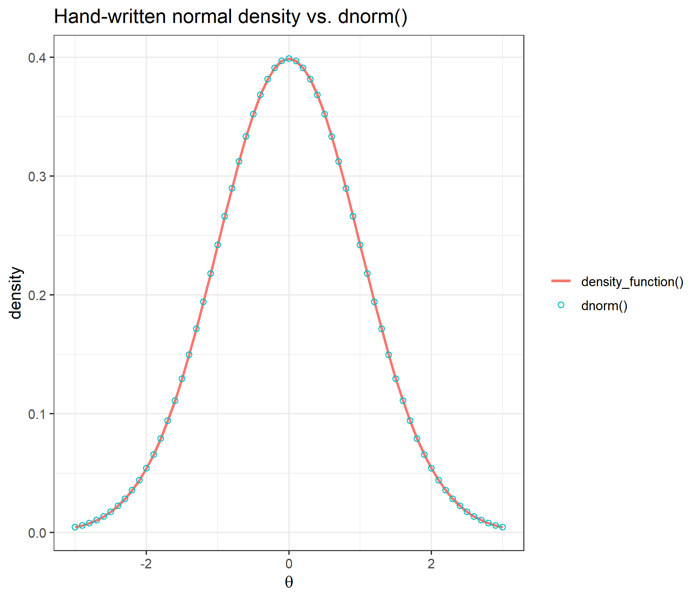
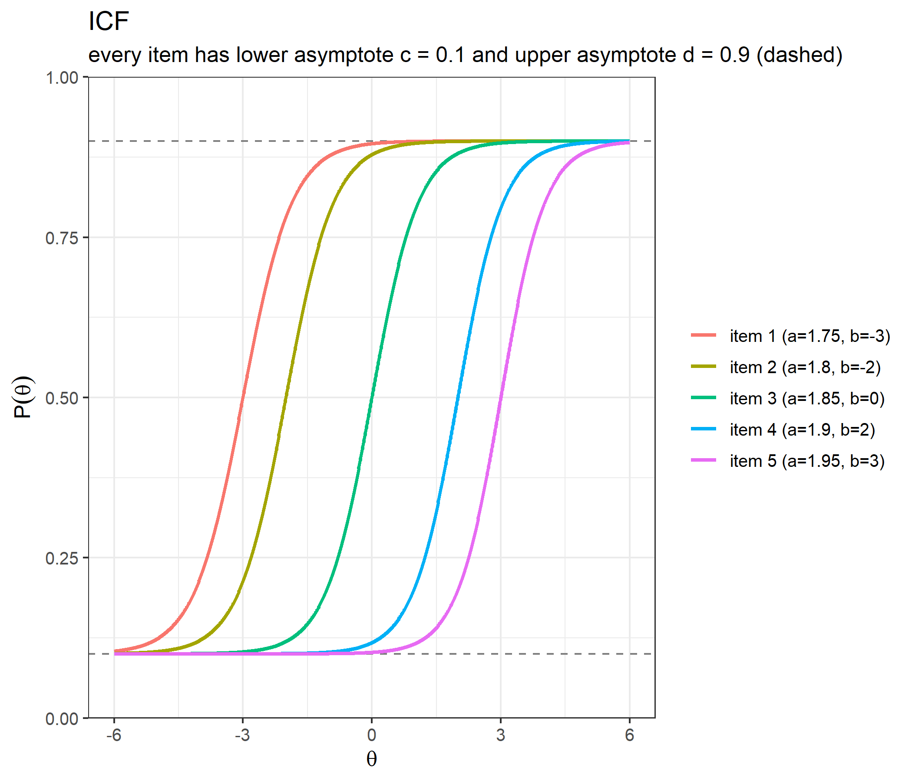
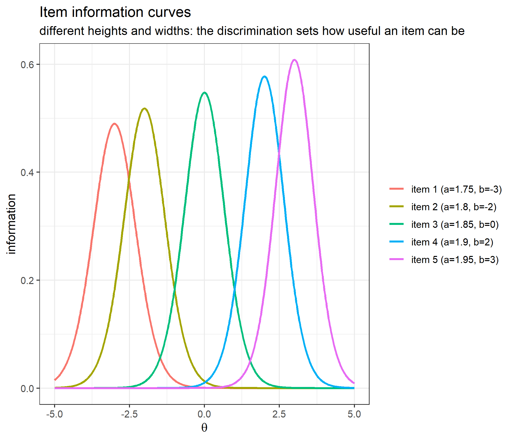
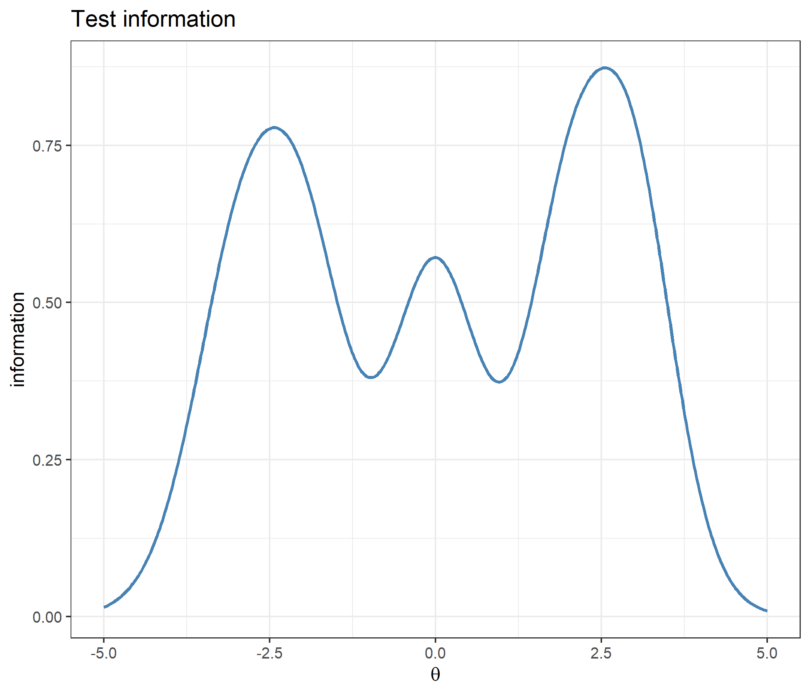
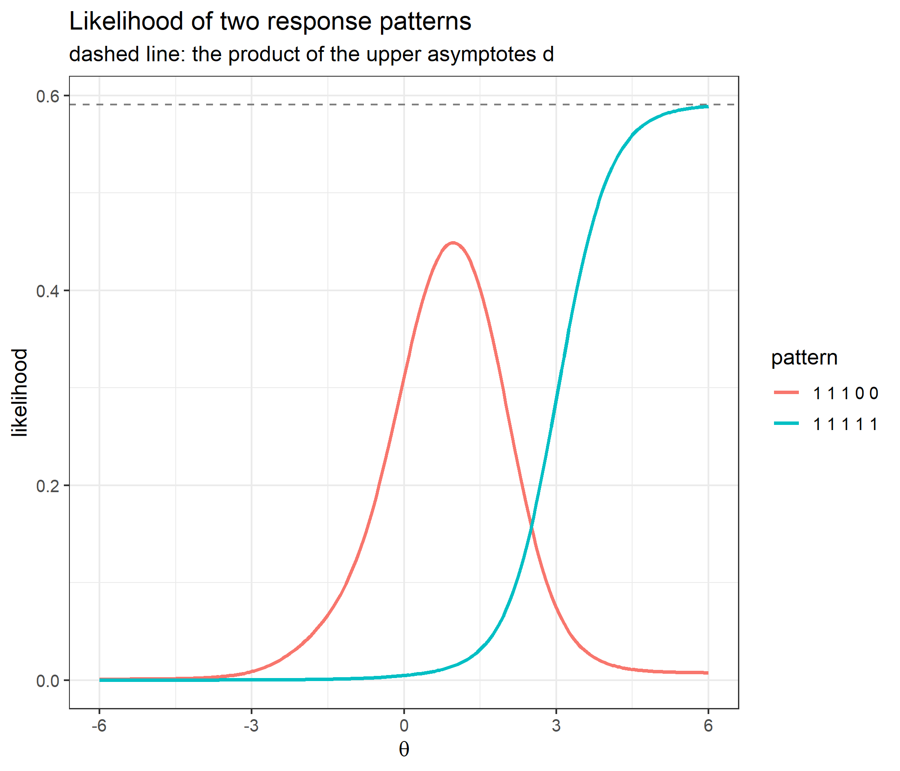
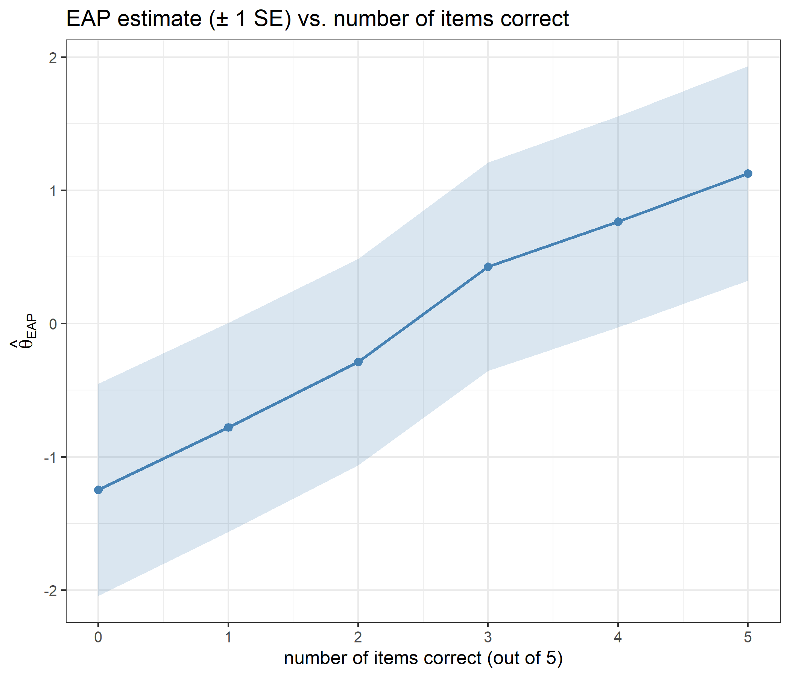
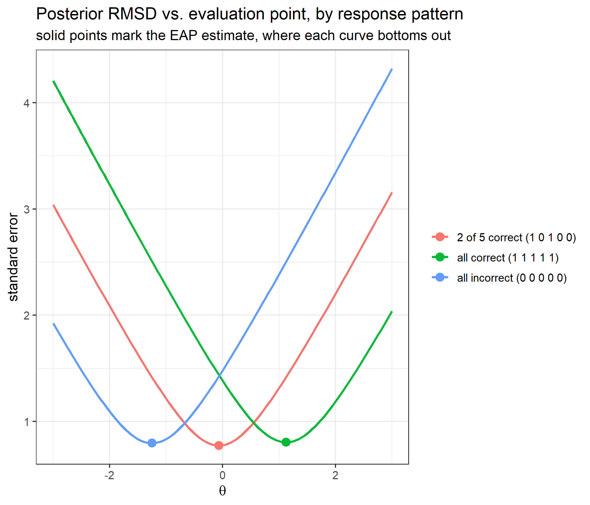
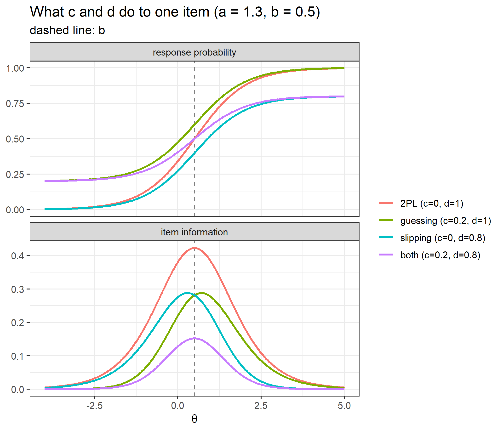
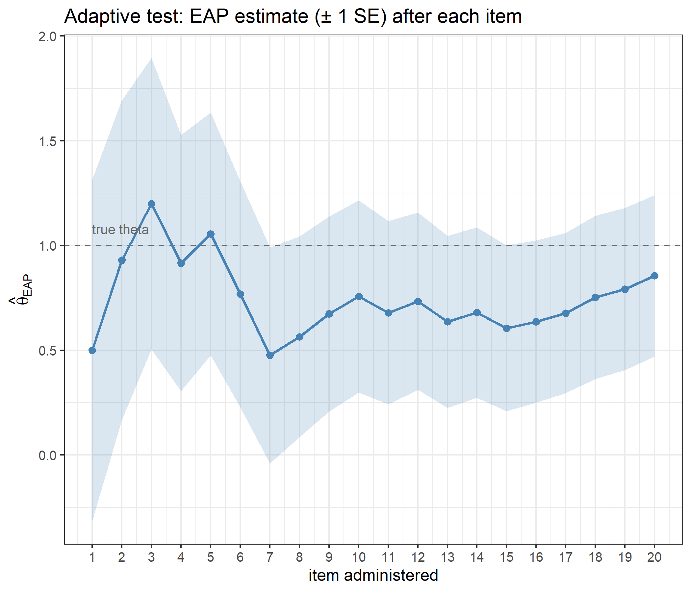

Code
library(ggplot2)
library(catR)
source("R/cat_eap_common.R", local = knitr::knit_global())
source("R/cat_eap_dichotomous.R", local = knitr::knit_global())The functions in cat_eap_common.R and cat_eap_dichotomous.R are adapted from the source code of the catR package by David Magis, Gilles Raîche and Juan Ramón Barrada (Magis & Raîche, 2012; Magis & Barrada, 2017). The model parameterisations, the formulas for the response probabilities and their derivatives, the item information, maximum-information item selection and the trapezoidal EAP integration all follow catR’s Pi(), Ii(), nextItem(), eapEst(), eapSem() and integrate.catR(), and much of the code keeps catR’s structure line for line. The purpose of the rewrite is teaching, not replacement: every step is written out in plain base R so that it can be read, and catR remains the reference implementation that every function is checked against below. catR is free software distributed under the GNU General Public License (version 3 or later).
Adaptive testing packages like catR score examinees using EAP (Expected A Posteriori) ability estimation, a Bayesian method that stays numerically stable where Maximum Likelihood breaks down: a response pattern that is all-correct, all-incorrect, or otherwise perfectly separates the item bank has a likelihood with no finite maximum.
This vignette covers dichotomous items, scored right/wrong, under the four-parameter logistic (4PL) model, which contains the 1PL, 2PL and 3PL models as special cases. working_examples/cat_eap_common.R holds the two model-free helpers, and working_examples/cat_eap_dichotomous.R holds the six model-specific functions. Together they implement the full adaptive-testing pipeline in plain base R, with no runtime dependency on catR:
| Function | File | Purpose | catR equivalent it mirrors |
|---|---|---|---|
density_function() |
cat_eap_common.R |
Normal density | stats::dnorm() |
integrate_cat() |
cat_eap_common.R |
Numerical integration (trapezoidal rule) | catR::integrate.catR() |
compute_pi_dichotomous() |
cat_eap_dichotomous.R |
4PL response probabilities and their first three derivatives | catR::Pi() |
compute_ii_dichotomous() |
cat_eap_dichotomous.R |
Item information and its first two derivatives | catR::Ii() |
compute_next_item_dichotomous() |
cat_eap_dichotomous.R |
Maximum Fisher information item selection | catR::nextItem(criterion = "MFI") |
compute_likelihood_dichotomous() |
cat_eap_dichotomous.R |
Likelihood of a 0/1 response pattern | (internal to catR::eapEst()) |
compute_eap_dichotomous() |
cat_eap_dichotomous.R |
EAP ability estimate | catR::eapEst() |
compute_eap_se_dichotomous() |
cat_eap_dichotomous.R |
EAP standard error | catR::eapSem() |
This vignette walks through the theory behind each function, validates every one of them against its catR counterpart, works through what the guessing and slipping parameters and unequal discriminations do to an estimate, and then runs a small adaptive test end to end.
Every dichotomous item response model gives the probability that an examinee with ability \(\theta\) answers item \(j\) correctly. The 4PL model writes it as
\[P_j(\theta) = c_j + (d_j-c_j)\,\frac{e^{Da_j(\theta-b_j)}}{1+e^{Da_j(\theta-b_j)}}\]
Setting \(d_j=1\) gives Birnbaum’s (1968) 3PL model; additionally setting \(c_j=0\) gives the 2PL model; additionally fixing \(a_j\) to one common value across items gives the 1PL/Rasch model. The upper asymptote \(d_j<1\) was proposed by Barton and Lord (1981) for high-ability examinees who still miss an easy item through carelessness.
cat_eap_dichotomous.R expects bank to be a numeric matrix with one row per item and exactly four columns, read by position: column 1 holds \(a_j\), column 2 \(b_j\), column 3 \(c_j\) and column 4 \(d_j\). A dichotomous item always has two response categories, so the number of columns never changes and there is no NA padding; a 1PL, 2PL or 3PL item is entered as a 4PL item with \(c_j=0\) and/or \(d_j=1\). compute_pi_dichotomous(), which every other function calls, begins with bank <- rbind(bank), so a single item may also be passed as a plain vector c(a, b, c, d).
Writing \(e_j = \exp\big(Da_j(\theta-b_j)\big)\), compute_pi_dichotomous() returns \(P_j\) together with its first three derivatives with respect to \(\theta\):
\[P'_j = \frac{Da_j(d_j-c_j)\,e_j}{(1+e_j)^2} \qquad P''_j = \frac{D^2a_j^2(d_j-c_j)\,e_j(1-e_j)}{(1+e_j)^3} \qquad P'''_j = \frac{D^3a_j^3(d_j-c_j)\,e_j(e_j^2-4e_j+1)}{(1+e_j)^4}\]
The first derivative is what item information is built from; the second and third are what the derivatives of the information are built from. Neither maximum-information selection nor EAP scoring needs the derivatives of the information, but they are returned for parity with catR.
Floating-point arithmetic cannot represent a probability arbitrarily close to 1: once \(e_j/(1+e_j)\) is within half a unit in the last place of 1 it rounds to exactly 1. The code therefore replaces any \(P_j\) that is exactly 0 with \(10^{-10}\) and any that is exactly 1 with \(1-10^{-10}\), as catR::Pi() does. Without this, \(1-P_j\) could be exactly zero, and the item information (which divides by \(P_j(1-P_j)\)) would become infinite. The floor only matters for items with \(c_j=0\) or \(d_j=1\); any other item has asymptotes strictly inside \((0,1)\).
The Fisher information of a dichotomous item is its squared slope divided by the variance of the response:
\[I_j(\theta) = \frac{P'^2_j}{P_j Q_j}, \qquad Q_j = 1-P_j\]
This is the polytomous formula \(\sum_k (\partial P_{jk}/\partial\theta)^2/P_{jk}\) with the two categories \(P_j\) and \(Q_j\), whose derivatives are \(P'_j\) and \(-P'_j\): \(P'^2_j/P_j + P'^2_j/Q_j = P'^2_j/(P_jQ_j)\). Test information is the sum of the item informations, and its reciprocal square root is the asymptotic standard error of a maximum-likelihood ability estimate.
For a test of \(n\) items, the test information is
\[I(\theta) = \sum_{j=1}^{n} I_j(\theta)\]
For the 2PL (\(c_j=0\), \(d_j=1\)) the slope is \(P'_j = Da_jP_jQ_j\), so the information reduces to \(D^2a_j^2P_jQ_j\). It is symmetric around \(b_j\), peaks there with height \(D^2a_j^2/4\), and so is governed entirely by the discrimination: in a 2PL bank the high-\(a\) items are simply better items. Guessing and slipping change both the height and the location of the peak. A guessing parameter \(c_j>0\) (with \(d_j=1\)) lowers the information and moves its peak above \(b_j\), to (Birnbaum, 1968)
\[\theta_{\max} = b_j + \frac{1}{Da_j}\,\log\frac{1+\sqrt{1+8c_j}}{2}\]
because a correct answer from an examinee just below \(b_j\) may well be a lucky guess and tells the test less than it would under the 2PL. The worked example on guessing and slipping below checks this formula numerically, and also checks its mirror image for \(d_j<1\).
Its mirror image, for slipping with \(c_j=0\) and \(d_j<1\), puts the peak below \(b_j\), at
\[\theta_{\max} = b_j - \frac{1}{Da_j}\,\log\frac{1+\sqrt{1+8(1-d_j)}}{2}\]
compute_ii_dichotomous() also returns the first two derivatives of the information. The first is
\[I'_j = \frac{P'_j\,\big[\,2P_jQ_jP''_j - P'^2_j(Q_j-P_j)\,\big]}{P_j^2Q_j^2}\]
and the second, written out in the same form as catR::Ii(), is
\[I''_j = \frac{2P_jQ_j\big(P''^2_j + P'_jP'''_j\big) - 2P'^2_jP''_j(Q_j-P_j)}{P_j^2Q_j^2} - \frac{3P_j^2Q_jP'^2_jP''_j - P_jP'^4_j(2Q_j-P_j)}{P_j^4Q_j^2} + \frac{3P_jQ_j^2P'^2_jP''_j - Q_jP'^4_j(Q_j-2P_j)}{P_j^2Q_j^4}\]
Both are checked against finite differences below as well as against catR.
An adaptive test picks, at each step, the unadministered item that is most informative at the current ability estimate: the Maximum Fisher Information (MFI) criterion. compute_next_item_dichotomous() computes \(I_j(\hat\theta)\) for every item not listed in out, the indices of the items already administered, and returns the index of the best one, its information, and the indices that were available.
The best item is
\[j^{*} = \arg\max_{j\notin\texttt{out}} I_j(\hat\theta)\]
If every item had the same \(a_j\) with \(c_j=0\) and \(d_j=1\), the information curves would be copies of one another shifted by \(b_j\), and MFI would reduce to picking the item whose \(b_j\) is closest to \(\hat\theta\). In a 4PL bank the curves differ in height and in shape, so a highly discriminating item some distance away can beat a weak item right on target, and the information of every available item really does have to be computed. This contrasts with the Rating Scale Model vignette, where every item reaches the same maximum information and MFI is close to (though not exactly) a nearest-neighbour lookup on the item locations.
The randomesque argument draws at random from the \(k\) most informative items instead of always taking the single best. This is standard exposure control: pure MFI would give the same handful of highly discriminating items to almost everyone. Two documented differences from catR::nextItem() matter only for ties: when several items are exactly tied for the maximum, catR draws one of them at random while this function takes the first; and with randomesque above 1, catR also keeps every item tied with the last one kept.
In general item is drawn uniformly from the \(k\) available items with the largest \(I_j(\hat\theta)\) (\(j^{*}\) when \(k=1\)), and info is its information, where
\[k = \max\!\big(1,\ \min(\lfloor\texttt{randomesque}\rfloor,\ |\texttt{available}|)\big), \qquad \texttt{available} = \{\,j : j\notin\texttt{out}\,\}\]
Assuming local independence (conditional on \(\theta\), responses to different items are independent), the likelihood of a 0/1 response pattern \(\mathbf{x}=(x_1,\ldots,x_n)\) is
\[L(\theta) = \prod_{j=1}^{n} P_j(\theta)^{x_j}\,Q_j(\theta)^{1-x_j}\]
The exponents act as a switch: a correct response contributes \(P_j\), a wrong one \(Q_j\). catR computes this product inside eapEst() and eapSem() without exporting it; compute_likelihood_dichotomous() exposes it as a function of its own, and compute_eap_dichotomous() and compute_eap_se_dichotomous() compute the same product internally.
Maximum Likelihood fails outright for an all-correct or all-incorrect pattern, because the likelihood keeps increasing toward \(\theta=\pm\infty\) with no interior maximum. EAP (Bock & Mislevy, 1982) sidesteps this by placing a prior \(\pi(\theta)\) on ability (standard normal by default) and reporting the mean of the posterior distribution
\[\hat\theta_{EAP} = E[\theta \mid \mathbf{x}] = \frac{\displaystyle\int \theta\,\pi(\theta)\,L(\theta)\,d\theta}{\displaystyle\int \pi(\theta)\,L(\theta)\,d\theta}\]
The prior is the normal density computed by density_function():
\[\pi(\theta) = \frac{1}{\sigma\sqrt{2\pi}}\exp\!\left(-\frac{(\theta-\mu)^2}{2\sigma^2}\right), \qquad (\mu,\sigma) = \texttt{priorPar}\]
For a response pattern \(\mathbf{x}=(x_1,\ldots,x_n)\), the likelihood and the two integrands are
\[ \begin{aligned} L(s) &= \prod_{j=1}^{n} P_j(s)^{x_j}\,[1-P_j(s)]^{1-x_j},\\ g(s) &= s\,\pi(s)\,L(s),\\ h(s) &= \pi(s)\,L(s). \end{aligned} \]
On the quadrature grid \(X=(\theta_1,\ldots,\theta_Q)\), where \(Q=\texttt{nqp}\) and \(\theta_q=\texttt{lower}+(q-1)(\texttt{upper}-\texttt{lower})/(Q-1)\), the estimate is approximated by
\[ \hat\theta_{EAP} \approx \frac{\operatorname{Trap}(X,\,g(X))}{\operatorname{Trap}(X,\,h(X))}, \]
where \(g(X)=(g(\theta_1),\ldots,g(\theta_Q))\) and \(h(X)=(h(\theta_1),\ldots,h(\theta_Q))\). Trap denotes the trapezoidal integration implemented by integrate_cat() below.
\[SE(\hat\theta_{EAP}) = \sqrt{\frac{\displaystyle\int (\theta-\hat\theta_{EAP})^2\,\pi(\theta)\,L(\theta)\,d\theta}{\displaystyle\int \pi(\theta)\,L(\theta)\,d\theta}}\]
For this calculation, the numerator integrand is the squared distance from the EAP estimate times the posterior weight; the denominator is the same posterior weight used above:
\[ \begin{aligned} g_{SE}(s) &= (s-\hat\theta_{EAP})^2\,\pi(s)\,L(s),\\ h(s) &= \pi(s)\,L(s). \end{aligned} \]
Using the same quadrature grid \(X\) as above, the numerical estimate is
\[ SE(\hat\theta_{EAP}) \approx \sqrt{\frac{\operatorname{Trap}(X,\,g_{SE}(X))}{\operatorname{Trap}(X,\,h(X))}}. \]
compute_eap_se_dichotomous() centres the deviation at its theta argument \(t\), which is \(\hat\theta_{EAP}\) in normal use but need not be:
\[\operatorname{RMSD}(t) = \sqrt{\frac{\operatorname{Trap}(X,\,g_t(X))}{\operatorname{Trap}(X,\,h(X))}}, \qquad g_t(s) = (s-t)^2\,\pi(s)\,L(s)\]
All four integrals are finite, and both denominators are positive, for every response pattern: \(0<L(\theta)\le 1\) and the normal prior has a finite mean and variance. This is what rescues the all-correct and all-incorrect patterns, whose likelihood never shrinks to zero in one tail and so cannot be integrated on its own.
Neither integral has a closed form, so the integrands are evaluated at nqp quadrature points \(\theta_1<\cdots<\theta_Q\) (default 33, evenly spaced from lower to upper, default \(\pm4\)) and integrated with the trapezoidal rule, which approximates the area between two adjacent points by a trapezoid, the width times the average of the two heights:
\[\int f(\theta)\,d\theta \approx \sum_{q=1}^{Q-1} (\theta_{q+1}-\theta_q)\,\frac{f(\theta_q)+f(\theta_{q+1})}{2}\]
integrate_cat() implements exactly this sum; density_function() supplies \(\pi(\theta)\).
Which feature of a response pattern the estimate depends on is a property of the model. Under the 1PL/Rasch model the likelihood depends on the pattern only through the number correct \(\sum_j x_j\), which is a sufficient statistic for \(\theta\): two examinees with the same number correct get the same estimate whichever items they answered correctly. This is what the Rating Scale and Partial Credit Model vignettes show for their raw scores. Under the 2PL the sufficient statistic becomes the discrimination-weighted score \(\sum_j a_jx_j\): a correct answer to a highly discriminating item counts for more, and the item difficulties play no part at all. Under the 3PL and 4PL there is no simple sufficient statistic, and the whole pattern matters. A worked example below demonstrates all three cases.
The bank from the roxygen examples of cat_eap_dichotomous.R: five items spanning the ability range, with different discriminations, and a guessing parameter of 0.1 and an upper asymptote of 0.9 on every item.
a b c d
1 1.75 -3 0.1 0.9
2 1.80 -2 0.1 0.9
3 1.85 0 0.1 0.9
4 1.90 2 0.1 0.9
5 1.95 3 0.1 0.9Because \(c_j = 1 - d_j\) for every item here, each curve is point-symmetric around its own \(b_j\); the section on item information shows what that does to the location of the information peak.
catRggplot(comparison, aes(x = x)) +
geom_line(aes(y = density_function, color = "density_function()"), linewidth = 1) +
geom_point(aes(y = dnorm, color = "dnorm()"), shape = 1) +
labs(title = "Hand-written normal density vs. dnorm()",
x = expression(theta), y = "density", color = NULL) +
theme_bw(base_size = 12)
integrate_cat integrate.catR
1 20.09437 20.09437Both approximate \(\int_{-3}^{3} e^x\,dx\) on the same 33-point trapezoidal grid and return the same number.
At a single ability value, the whole returned list (probabilities and all three derivatives) matches catR::Pi():
catR.Pi catR.dPi catR.d2Pi catR.d3Pi Pi dPi
1 0.8958239 0.007270026 -0.012589720 0.02157076 0.8958239 0.007270026
2 0.8787224 0.037281015 -0.063536200 0.10202719 0.8787224 0.037281015
3 0.5000000 0.370000000 0.000000000 -0.63316250 0.5000000 0.370000000
4 0.1175050 0.032531771 0.059105386 0.10235869 0.1175050 0.032531771
5 0.1022973 0.004466877 0.008660385 0.01669349 0.1022973 0.004466877
d2Pi d3Pi
1 -0.012589720 0.02157076
2 -0.063536200 0.10202719
3 0.000000000 -0.63316250
4 0.059105386 0.10235869
5 0.008660385 0.01669349theta_grid <- seq(-6, 6, by = 0.01)
prob_curves <- t(sapply(theta_grid, function(th) compute_pi_dichotomous(theta = th, bank)$Pi))
df_curves <- data.frame(theta = theta_grid, prob_curves)
names(df_curves)[-1] <- paste0("item ", 1:5, " (a=", bank[, "a"], ", b=", bank[, "b"], ")")
df_curves_long <- reshape2::melt(df_curves, id.vars = "theta",
variable.name = "item", value.name = "P")
ggplot(df_curves_long, aes(x = theta, y = P, color = item)) +
geom_hline(yintercept = c(0.1, 0.9), linetype = "dashed", color = "grey50") +
geom_line(linewidth = 1) +
scale_y_continuous(expand=c(0, 0), limits=c(0, 1)) +
labs(title = "ICF",
subtitle = "every item has lower asymptote c = 0.1 and upper asymptote d = 0.9 (dashed)",
x = expression(theta),
y = expression(P(theta)),
color = NULL) +
theme_bw(base_size = 12)
Each curve rises from the guessing floor of 0.1 to the slipping ceiling of 0.9, passing through 0.5 at its own \(b_j\). Steeper curves (higher \(a\)) discriminate more sharply around their difficulty; curves shifted right are harder.
catR.Ii catR.dIi catR.d2Ii Ii dIi
1 0.0005663452 -0.0019265867 0.006460126 0.0005663452 -0.0019265867
2 0.0130419693 -0.0409977656 0.119867898 0.0130419693 -0.0409977656
3 0.5476000000 0.0000000000 -1.274429480 0.5476000000 0.0000000000
4 0.0102057931 0.0346355167 0.110734946 0.0102057931 0.0346355167
5 0.0002172758 0.0008341025 0.003176704 0.0002172758 0.0008341025
d2Ii
1 0.006460126
2 0.119867898
3 -1.274429480
4 0.110734946
5 0.003176704info_grid <- seq(-5, 5, by = 0.02)
info <- t(sapply(info_grid, function(th) compute_ii_dichotomous(th, bank)$Ii))
df_info <- data.frame(theta = info_grid, info)
names(df_info)[-1] <- paste0("item ", 1:5, " (a=", bank[, "a"], ", b=", bank[, "b"], ")")
df_info_long <- reshape2::melt(df_info, id.vars = "theta",
variable.name = "item", value.name = "information")
ggplot(df_info_long, aes(x = theta, y = information, color = item)) +
geom_line(linewidth = 1) +
labs(title = "Item information curves",
subtitle = "different heights and widths: the discrimination sets how useful an item can be",
x = expression(theta), y = "information", color = NULL) +
theme_bw(base_size = 12)

Locating each item’s peak numerically shows how different this is from a Rasch-family bank:
peaks <- t(sapply(1:5, function(j) {
opt <- optimize(function(th) compute_ii_dichotomous(th, bank[j, , drop = FALSE])$Ii,
interval = bank[j, "b"] + c(-4, 4), maximum = TRUE, tol = 1e-10)
c(peak = opt$maximum, max_information = opt$objective)
}))
data.frame(b = bank[, "b"], a = bank[, "a"], peaks,
peak_minus_b = peaks[, "peak"] - bank[, "b"],
ratio_to_2PL_peak = peaks[, "max_information"] / (bank[, "a"]^2 / 4)) b a peak max_information peak_minus_b ratio_to_2PL_peak
1 -3 1.75 -3.000000e+00 0.4900 2.220446e-15 0.64
2 -2 1.80 -2.000000e+00 0.5184 1.554312e-15 0.64
3 0 1.85 -6.253594e-09 0.5476 -6.253594e-09 0.64
4 2 1.90 2.000000e+00 0.5776 8.881784e-16 0.64
5 3 1.95 3.000000e+00 0.6084 1.332268e-15 0.64mine_item catR_item mine_info catR_info
3.0000 3.0000 0.5476 0.5476 With items already administered excluded via out:
mine_item catR_item mine_info catR_info
2.00000000 2.00000000 0.01304197 0.01304197 catR has no exported likelihood function to compare against, so the check rebuilds the same product from catR’s own probabilities, for several patterns and ability values:
compute_likelihood_dichotomous from_catR_Pi
0.3774149 0.3774149 lik_grid <- seq(-6, 6, by = 0.05)
df_lik <- data.frame(theta = lik_grid,
"1 1 1 0 0" = sapply(lik_grid, function(th)
compute_likelihood_dichotomous(th, bank, c(1, 1, 1, 0, 0))),
"1 1 1 1 1" = sapply(lik_grid, function(th)
compute_likelihood_dichotomous(th, bank, c(1, 1, 1, 1, 1))),
check.names = FALSE)
df_lik_long <- reshape2::melt(df_lik, id.vars = "theta",
variable.name = "pattern", value.name = "likelihood")
ggplot(df_lik_long, aes(x = theta, y = likelihood, color = pattern)) +
geom_hline(yintercept = prod(bank[, "d"]), linetype = "dashed", color = "grey50") +
geom_line(linewidth = 1) +
labs(title = "Likelihood of two response patterns",
subtitle = "dashed line: the product of the upper asymptotes d",
x = expression(theta), y = "likelihood", color = "pattern") +
theme_bw(base_size = 12)
patterns <- list(c(0, 0, 0, 0, 0),
c(1, 0, 0, 0, 0),
c(1, 1, 0, 0, 0),
c(1, 1, 1, 0, 0),
c(1, 1, 1, 1, 0),
c(1, 1, 1, 1, 1),
c(0, 0, 1, 1, 1),
c(0, 1, 0, 1, 0))
results<-do.call(rbind,lapply(patterns,function(x) {
est_0<-compute_eap_dichotomous(bank,x,D=1,priorPar=c(0,1),lower=-4,upper=4,nqp=33)
est_1<-catR::eapEst(bank,x,D=1,priorDist="norm",priorPar=c(0,1),lower=-4,upper=4,nqp=33)
se_0<-compute_eap_se_dichotomous(est_0,bank,x,D=1,priorPar=c(0,1),lower=-4,upper=4,nqp=33)
se_1<-catR::eapSem(est_0,bank,x,D=1,priorPar=c(0,1),lower=-4,upper=4,nqp=33)
data.frame(pattern=paste(x,collapse=""),
eap=est_0,
eap_catR=est_1,
se=se_0,
se_catR=se_1)
}))
results pattern eap eap_catR se se_catR
1 00000 -1.3397028 -1.3397028 1.0024100 1.0024100
2 10000 -0.8954934 -0.8954934 0.8875608 0.8875608
3 11000 -0.3790041 -0.3790041 0.7775310 0.7775310
4 11100 0.3886053 0.3886053 0.7758057 0.7758057
5 11110 0.9114764 0.9114764 0.8934987 0.8934987
6 11111 1.3498110 1.3498110 1.0229576 1.0229576
7 00111 0.9696999 0.9696999 1.3409227 1.3409227
8 01010 -0.2755731 -0.2755731 1.0216724 1.0216724Reproducing “Example 1” from the bottom of cat_eap_dichotomous.R: a 2PL bank (\(c_j = 0\), \(d_j = 1\)) scored against response patterns with an increasing number of correct answers, always the easiest items first.
a b c d
1 0.7521 -1.5521 0 1
2 0.8083 -0.9083 0 1
3 1.1857 0.1857 0 1
4 0.5481 0.5481 0 1
5 0.5695 1.5695 0 1responses <- list(c(0, 0, 0, 0, 0),
c(1, 0, 0, 0, 0),
c(1, 1, 0, 0, 0),
c(1, 1, 1, 0, 0),
c(1, 1, 1, 1, 0),
c(1, 1, 1, 1, 1))
results <- data.frame(
n_correct = sapply(responses, sum),
theta_EAP = sapply(responses, function(x) compute_eap_dichotomous(bank_2pl, x))
)
results$SE <- mapply(function(x, th) compute_eap_se_dichotomous(th, bank_2pl, x),
responses, results$theta_EAP)
results n_correct theta_EAP SE
1 0 -1.2469219 0.7962924
2 1 -0.7780203 0.7832647
3 2 -0.2881144 0.7752039
4 3 0.4264169 0.7810946
5 4 0.7648196 0.7910812
6 5 1.1272372 0.8046738ggplot(results, aes(x = n_correct, y = theta_EAP)) +
geom_ribbon(aes(ymin = theta_EAP - SE, ymax = theta_EAP + SE), alpha = 0.2, fill = "steelblue") +
geom_line(color = "steelblue", linewidth = 1) +
geom_point(size = 2, color = "steelblue") +
labs(title = "EAP estimate (± 1 SE) vs. number of items correct",
x = "number of items correct (out of 5)", y = expression(hat(theta)[EAP])) +
theme_bw(base_size = 12)
The estimate climbs monotonically with the number of correct responses, from -1.247 to 1.127. It never approaches the integration bounds of \(\pm4\), even for the all-incorrect and all-correct patterns: the normal prior pulls the posterior mean back toward 0. That regularisation is the reason to prefer EAP over Maximum Likelihood at the edges of the score range, and the price is a deliberate, known bias toward the prior mean.
The standard error barely moves across the range, from 0.775 to 0.805. It is smallest for 2 correct and largest for 5 correct: a mid-range pattern pins \(\theta\) down a little more tightly against this bank than a perfect or a zero score, which is compatible with a wide range of high (or low) abilities. Five items of moderate discrimination cannot shrink a standard normal prior by much, which is why the standard error stays close to 0.8 throughout.
compute_eap_se_dichotomous() takes theta as a free argument. Passing the EAP estimate returns the posterior standard deviation; passing anything else returns the posterior root mean squared deviation around that point. The same 2PL bank, evaluated at every \(\theta\) from \(-3\) to \(3\) under three response patterns:
se_grid <- seq(-3, 3, by = 0.05)
se_patterns <- list("all incorrect (0 0 0 0 0)" = c(0, 0, 0, 0, 0),
"all correct (1 1 1 1 1)" = c(1, 1, 1, 1, 1),
"2 of 5 correct (1 0 1 0 0)" = c(1, 0, 1, 0, 0))
se_df <- do.call(rbind, lapply(names(se_patterns), function(nm) {
data.frame(theta = se_grid,
SE = sapply(se_grid, function(th)
compute_eap_se_dichotomous(theta = th, bank = bank_2pl, x = se_patterns[[nm]])),
pattern = nm)
}))
eap_points <- do.call(rbind, lapply(names(se_patterns), function(nm) {
th <- compute_eap_dichotomous(bank_2pl, se_patterns[[nm]])
data.frame(theta = th, SE = compute_eap_se_dichotomous(th, bank_2pl, se_patterns[[nm]]),
pattern = nm)
}))
eap_points theta SE pattern
1 -1.24692189 0.7962924 all incorrect (0 0 0 0 0)
2 1.12723723 0.8046738 all correct (1 1 1 1 1)
3 -0.06158777 0.7746548 2 of 5 correct (1 0 1 0 0)ggplot(se_df, aes(x = theta, y = SE, color = pattern)) +
geom_line(linewidth = 1) +
geom_point(data = eap_points, size = 3) +
labs(title = "Posterior RMSD vs. evaluation point, by response pattern",
subtitle = "solid points mark the EAP estimate, where each curve bottoms out",
x = expression(theta), y = "standard error", color = NULL) +
theme_bw(base_size = 12)
Each curve bottoms out at its own EAP estimate. This is not a coincidence of the bank but the defining property of a mean: the mean squared deviation of a distribution around a point \(t\) is its variance plus \((t - \text{mean})^2\). The identity holds for the quadrature weights as well, to rounding error:
all incorrect (0 0 0 0 0) all correct (1 1 1 1 1)
8.881784e-16 8.881784e-16
2 of 5 correct (1 0 1 0 0)
4.440892e-16 So the curves carry no information beyond the EAP estimate and its standard error, and the free theta argument is useful mainly for showing what the pairing compute_eap_se_dichotomous(compute_eap_dichotomous(bank, x), bank, x) is doing. In practice the two functions are always called that way.
One item, \(a = 1.3\) and \(b = 0.5\), in four versions: a 2PL item, a 3PL item with guessing \(c = 0.2\), an item with slipping \(d = 0.8\) and no guessing, and an item with both.
variants <- list("2PL (c=0, d=1)" = c(1.3, 0.5, 0, 1),
"guessing (c=0.2, d=1)" = c(1.3, 0.5, 0.2, 1),
"slipping (c=0, d=0.8)" = c(1.3, 0.5, 0, 0.8),
"both (c=0.2, d=0.8)" = c(1.3, 0.5, 0.2, 0.8))
gs_grid <- seq(-4, 5, by = 0.02)
gs_curves <- do.call(rbind, lapply(names(variants), function(nm) {
it <- variants[[nm]]
data.frame(theta = gs_grid, version = nm,
P = compute_pi_dichotomous(gs_grid, it)$Pi,
information = compute_ii_dichotomous(gs_grid, it)$Ii)
}))
gs_curves$version <- factor(gs_curves$version, levels = names(variants))
gs_long <- reshape2::melt(gs_curves, id.vars = c("theta", "version"),
variable.name = "curve", value.name = "value")ggplot(gs_long, aes(x = theta, y = value, color = version)) +
geom_vline(xintercept = 0.5, linetype = "dashed", color = "grey50") +
geom_line(linewidth = 1) +
facet_wrap(~ curve, ncol = 1, scales = "free_y",
labeller = as_labeller(c(P = "response probability", information = "item information"))) +
labs(title = "What c and d do to one item (a = 1.3, b = 0.5)",
subtitle = "dashed line: b",
x = expression(theta), y = NULL, color = NULL) +
theme_bw(base_size = 12)
Locating each information peak numerically and comparing it with the closed-form predictions from the theory section: \(b + \log\big((1+\sqrt{1+8c})/2\big)/(Da)\) for guessing, its mirror image \(b - \log\big((1+\sqrt{1+8(1-d)})/2\big)/(Da)\) for slipping, and \(b\) itself when \(c = 1-d\).
shift <- function(g, a, D = 1) log((1 + sqrt(1 + 8 * g)) / 2) / (D * a)
predicted <- c(0.5, 0.5 + shift(0.2, 1.3), 0.5 - shift(1 - 0.8, 1.3), 0.5)
gs_peaks <- do.call(rbind, lapply(seq_along(variants), function(i) {
it <- variants[[i]]
opt <- optimize(function(th) compute_ii_dichotomous(th, it)$Ii,
interval = c(-4, 5), maximum = TRUE, tol = 1e-10)
data.frame(version = names(variants)[i], peak = opt$maximum, predicted = predicted[i],
max_information = opt$objective,
ratio_to_2PL_peak = opt$objective / (1.3^2 / 4))
}))
gs_peaks version peak predicted max_information
bank 2PL (c=0, d=1) 0.5000000 0.5000000 0.4225000
bank1 guessing (c=0.2, d=1) 0.7054938 0.7054938 0.2879516
bank2 slipping (c=0, d=0.8) 0.2945062 0.2945062 0.2879516
bank3 both (c=0.2, d=0.8) 0.5000000 0.5000000 0.1521000
ratio_to_2PL_peak
bank 1.0000000
bank1 0.6815422
bank2 0.6815422
bank3 0.3600000The guessing item’s information peaks 0.205 above \(b\) and the slipping item’s the same distance below it, both where the formulas say. With both asymptotes and \(c = 1 - d\) the two shifts cancel and the peak returns to \(b\), just as in the item bank above. All three non-2PL versions lose information: 32% of the 2PL peak for \(c = 0.2\) or \(d = 0.8\) alone, and 64% with both, where the peak is \((d-c)^2 =\) 0.36 of the 2PL value. Guessing and slipping of the same size cost the same amount of information, because the slipping item is the guessing item reflected through \((b, 0.5)\).
The guessing formula is checked here for a range of \(c\) at both metric constants, as the difference between the numerical peak and the prediction:
formula_check <- expand.grid(c = c(0.05, 0.1, 0.2, 0.25, 0.35), D = c(1, 1.702))
formula_check$numerical_minus_formula <- mapply(function(g, D) {
it <- c(1.3, 0.5, g, 1)
optimize(function(th) compute_ii_dichotomous(th, it, D = D)$Ii,
interval = c(-4, 5), maximum = TRUE, tol = 1e-10)$maximum - (0.5 + shift(g, 1.3, D))
}, formula_check$c, formula_check$D)
formula_check c D numerical_minus_formula
1 0.05 1.000 -1.276698e-08
2 0.10 1.000 -1.962512e-08
3 0.20 1.000 1.634635e-09
4 0.25 1.000 3.455876e-09
5 0.35 1.000 7.003635e-09
6 0.05 1.702 1.012235e-11
7 0.10 1.702 1.522737e-11
8 0.20 1.702 7.030289e-09
9 0.25 1.702 1.072704e-08
10 0.35 1.702 -1.011230e-08The differences are at the level of the optimiser’s tolerance, so the formula in the roxygen note of compute_ii_dichotomous() holds, including its \(1/D\) scaling.
Take every pattern with exactly two correct answers out of five (there are 10 of them) and score each under three versions of the Example 1 bank: a 1PL version with every \(a_j = 1\), the original 2PL bank, and a 3PL version with every \(a_j = 1\) and \(c_j = 0.2\).
pairs <- combn(5, 2)
two_correct <- lapply(seq_len(ncol(pairs)), function(k) {
x <- rep(0, 5)
x[pairs[, k]] <- 1
x
})
bank_1pl <- bank_2pl
bank_1pl[, "a"] <- 1
bank_3pl <- bank_1pl
bank_3pl[, "c"] <- 0.2
pattern_table <- data.frame(
pattern = sapply(two_correct, paste, collapse = " "),
weighted_score = sapply(two_correct, function(x) sum(a_2pl * x)),
EAP_1PL = sapply(two_correct, function(x) compute_eap_dichotomous(bank_1pl, x)),
EAP_2PL = sapply(two_correct, function(x) compute_eap_dichotomous(bank_2pl, x)),
EAP_3PL = sapply(two_correct, function(x) compute_eap_dichotomous(bank_3pl, x))
)
pattern_table[order(pattern_table$EAP_2PL), ] pattern weighted_score EAP_1PL EAP_2PL EAP_3PL
10 0 0 0 1 1 1.1176 -0.2762533 -0.55520429 -0.8866599
3 1 0 0 1 0 1.3002 -0.2762533 -0.44477592 -0.5250563
4 1 0 0 0 1 1.3216 -0.2762533 -0.43186436 -0.6637299
6 0 1 0 1 0 1.3564 -0.2762533 -0.41087983 -0.5646559
7 0 1 0 0 1 1.3778 -0.2762533 -0.39798249 -0.7072493
1 1 1 0 0 0 1.5604 -0.2762533 -0.28811441 -0.3824532
8 0 0 1 1 0 1.7338 -0.2762533 -0.18399237 -0.6834367
9 0 0 1 0 1 1.7552 -0.2762533 -0.17115028 -0.8332303
2 1 0 1 0 0 1.9378 -0.2762533 -0.06158777 -0.4798948
5 0 1 1 0 0 1.9940 -0.2762533 -0.02785831 -0.5176594 range_1PL range_2PL range_3PL
1.665335e-16 5.273460e-01 5.042068e-01 [1] TRUEThree models, three different answers to “what does the estimate depend on?”:
The 2PL claim can be made sharper. Under the 2PL two patterns with the same weighted score get the same estimate even when their numbers correct differ. With discriminations 0.5, 0.75 and 1.25 (all exactly representable in binary), getting the first two items right scores \(0.5 + 0.75 = 1.25\), the same as getting only the third right:
bank_w <- matrix(c(0.5, 0.75, 1.25, -1, 0, 1, 0, 0, 0, 1, 1, 1), nrow = 3,
dimnames = list(1:3, c("a", "b", "c", "d")))
bank_w_3pl <- bank_w
bank_w_3pl[, "c"] <- 0.2
data.frame(pattern = c("1 1 0", "0 0 1"),
n_correct = c(2, 1),
weighted_score = c(sum(bank_w[, "a"] * c(1, 1, 0)), sum(bank_w[, "a"] * c(0, 0, 1))),
EAP_2PL = sprintf("%.12f", c(compute_eap_dichotomous(bank_w, c(1, 1, 0)),
compute_eap_dichotomous(bank_w, c(0, 0, 1)))),
EAP_3PL = sprintf("%.12f", c(compute_eap_dichotomous(bank_w_3pl, c(1, 1, 0)),
compute_eap_dichotomous(bank_w_3pl, c(0, 0, 1))))) pattern n_correct weighted_score EAP_2PL EAP_3PL
1 1 1 0 2 1.25 0.163749566152 0.027986838554
2 0 0 1 1 1.25 0.163749566152 -0.278655852616Under the 2PL two correct answers and one correct answer give identical estimates to twelve decimal places; adding a guessing parameter of 0.2 to every item separates them. This is what the discrimination parameter buys and what it costs. Better items count for more, which makes better use of the data; but the estimate can no longer be explained from the score sheet alone, and two examinees with the same number correct can legitimately receive different scores.
Five items are too few for an adaptive test to choose anything, so this example generates a 40-item 4PL bank with discriminations between 0.8 and 2, difficulties spread around 0, guessing up to 0.25 and upper asymptotes between 0.9 and 1.
a b c d
1 1.80 1.37 0.24 0.91
2 1.19 0.38 0.02 0.98
3 1.62 1.25 0.20 0.98
4 1.64 -0.26 0.03 0.92
5 1.35 0.48 0.18 0.98
6 1.64 -1.85 0.00 0.98At each step the loop picks the most informative unadministered item at the current estimate, simulates a response from an examinee with true ability 1, and rescores.
set.seed(1)
true_theta <- 1.0
# simulate a 0/1 response to item j from an examinee at theta
simulate_response <- function(j, theta) {
p <- compute_pi_dichotomous(theta, bank_cat[j, , drop = FALSE])$Pi
rbinom(1, 1, p)
}
theta <- 0
administered <- integer(0)
responses <- integer(0)
trace <- data.frame()
for (step in 1:20) {
sel <- compute_next_item_dichotomous(theta, bank_cat, out = administered)
theta_before <- theta
administered <- c(administered, sel$item)
responses <- c(responses, simulate_response(sel$item, true_theta))
sub_bank <- bank_cat[administered, , drop = FALSE]
theta <- compute_eap_dichotomous(sub_bank, responses)
se <- compute_eap_se_dichotomous(theta, sub_bank, responses)
trace <- rbind(trace, data.frame(step = step, theta_before = theta_before, item = sel$item,
a = bank_cat[sel$item, "a"], b = bank_cat[sel$item, "b"],
information = unname(sel$info),
response = tail(responses, 1),
theta_EAP = theta, SE = se))
}
rownames(trace) <- NULL
trace step theta_before item a b information response theta_EAP SE
1 1 0.0000000 38 1.96 -0.29 0.7741458 1 0.4994706 0.8148179
2 2 0.4994706 28 1.78 0.80 0.5790472 1 0.9300785 0.7631718
3 3 0.9300785 23 1.62 0.59 0.4768977 1 1.2003800 0.6954405
4 4 1.2003800 3 1.62 1.25 0.4068768 0 0.9162451 0.6117131
5 5 0.9162451 16 1.81 0.47 0.4577606 1 1.0560148 0.5790796
6 6 1.0560148 27 1.54 0.39 0.3502425 0 0.7679117 0.5393279
7 7 0.7679117 40 1.58 -0.04 0.3854264 0 0.4756732 0.5150931
8 8 0.4756732 12 1.94 -0.39 0.4165912 1 0.5641784 0.4789634
9 9 0.5641784 2 1.19 0.38 0.3220779 1 0.6734847 0.4652500
10 10 0.6734847 5 1.35 0.48 0.3029440 1 0.7570965 0.4581241
11 11 0.7570965 14 1.42 1.45 0.2643348 0 0.6795539 0.4370484
12 12 0.6795539 4 1.64 -0.26 0.2486879 1 0.7342323 0.4235285
13 13 0.7342323 20 1.15 0.51 0.2199065 0 0.6362468 0.4106558
14 14 0.6362468 26 1.15 0.16 0.2011803 1 0.6809798 0.4067322
15 15 0.6809798 8 1.16 0.82 0.1936899 0 0.6044335 0.3956015
16 16 0.6044335 13 1.64 -0.61 0.1826315 1 0.6371167 0.3872493
17 17 0.6371167 7 1.30 -0.14 0.1770243 1 0.6778974 0.3819418
18 18 0.6778974 1 1.80 1.37 0.1841058 1 0.7527370 0.3893765
19 19 0.7527370 22 0.93 -0.01 0.1609148 1 0.7923930 0.3864475
20 20 0.7923930 37 0.86 1.07 0.1509293 1 0.8559116 0.3851877catR::nextItem() is then asked the same question at every step: the same estimate, the same items already given. The check runs after the loop rather than inside it because catR::nextItem() draws from the random-number stream even when there is nothing to draw between, and calling it inside the loop would change the simulated responses:
runif_after_catR_nextItem runif_untouched
0.5571222 0.2655087 [1] TRUEfinal_mine final_catR se_mine se_catR
0.8559116 0.8559116 0.3851877 0.3851877 ggplot(trace, aes(x = step, y = theta_EAP)) +
geom_hline(yintercept = true_theta, linetype = "dashed", color = "grey40") +
geom_ribbon(aes(ymin = theta_EAP - SE, ymax = theta_EAP + SE),
alpha = 0.2, fill = "steelblue") +
geom_line(color = "steelblue", linewidth = 1) +
geom_point(size = 2, color = "steelblue") +
annotate("text", x = 1, y = true_theta + 0.08, hjust = 0,
label = "true theta", color = "grey40", size = 3.5) +
scale_x_continuous(breaks = trace$step) +
labs(title = "Adaptive test: EAP estimate (± 1 SE) after each item",
x = "item administered", y = expression(hat(theta)[EAP])) +
theme_bw(base_size = 12)
first_item_a mean_a_first_5 mean_a_last_5 mean_a_bank
1.96000 1.75800 1.30600 1.41025
steps_where_SE_rose
1.00000 [1] 18catR picks the same item at every one of the 20 steps, and the final estimate and standard error agree with catR’s. After 20 items the estimate is 0.856 with a standard error of 0.385, down from 0.815 after the first item. The fall is not strictly monotone: the standard error rose 1 time(s), at step(s) 18. For dichotomous items a response that contradicts the current estimate can widen the posterior, so a posterior standard deviation, unlike the asymptotic \(1/\sqrt{\text{test information}}\), need not shrink with every item.
The item choices show the discrimination at work. MFI opens with the most informative item at \(\theta = 0\), which has \(a =\) 1.96, and the first five items average \(a =\) 1.76 against a bank average of 1.41. By the last five steps the best items near the estimate are used up and the average has fallen to 1.31. Pure MFI spends the strongest items first.
Pure MFI is deterministic: every examinee starting at \(\theta = 0\) receives the same first item. The randomesque argument draws at random from the \(k\) best instead.
38
2000
4 12 18 38 40
396 419 382 399 404 With randomesque = 1 item 38 is chosen 2000 times out of 2000. With randomesque = 5 the load is spread over 5 items, each chosen between 382 and 419 times. In a 4PL bank the price is higher than in a Rasch-family bank, because the runners-up are not just slightly off target but genuinely less informative items:
38 12 40 4 18
0.774 0.746 0.564 0.496 0.428 best_item mean_of_top_5 proportion_of_best
0.7741458 0.6015497 0.7770497 Spreading the first item over the five best retains on average 78% of the information of always taking the single best: the standard trade-off between measurement efficiency and item security, and one that is steeper when discriminations vary.
The EAP integrals are approximations, and four arguments control them. None of these is a free choice to make casually. The all-correct pattern on the item bank is the hardest case, because its likelihood never comes back down:
x <- c(1, 1, 1, 1, 1)
settings <- rbind(
data.frame(setting = "quadrature points", value = c(11, 33, 101, 501),
theta = sapply(c(11, 33, 101, 501),
function(n) compute_eap_dichotomous(bank, x, nqp = n))),
data.frame(setting = "integration bound", value = c(3, 4, 6),
theta = sapply(c(3, 4, 6),
function(b) compute_eap_dichotomous(bank, x, lower = -b, upper = b))),
data.frame(setting = "prior SD", value = c(1, 2),
theta = sapply(c(1, 2),
function(s) compute_eap_dichotomous(bank, x, priorPar = c(0, s)))),
data.frame(setting = "metric constant D", value = c(1, 1.702),
theta = sapply(c(1, 1.702),
function(d) compute_eap_dichotomous(bank, x, D = d)))
)
settings setting value theta
1 quadrature points 11.000 1.347322
2 quadrature points 33.000 1.349811
3 quadrature points 101.000 1.350068
4 quadrature points 501.000 1.350097
5 integration bound 3.000 1.262503
6 integration bound 4.000 1.349811
7 integration bound 6.000 1.354500
8 prior SD 1.000 1.349811
9 prior SD 2.000 2.707759
10 metric constant D 1.000 1.349811
11 metric constant D 1.702 1.398733Three different kinds of effect are visible here, and they should not be confused with one another:
catR.All eight functions reproduce their catR counterparts to machine precision: the normal density and the trapezoidal integrator in cat_eap_common.R, and in cat_eap_dichotomous.R the 4PL probabilities with their three derivatives, the item information with its two derivatives, MFI item selection with and without excluded items, the likelihood, and the two integrals that define EAP scoring. Finite differences confirm the derivative formulas independently of catR, at both metric constants. Together the functions run a complete dichotomous adaptive test in a few hundred lines of base R.
Written out, the model’s character is easy to see. The discrimination sets how useful an item can be, so information curves differ in height and MFI has to compute them all rather than look for the nearest difficulty; it also makes the response pattern, not only the number correct, drive the estimate. The guessing and slipping asymptotes lower the information and pull its peak away from \(b\), in opposite directions, in the amounts the closed-form expression predicts. The probability floor keeps the information finite when a probability rounds to 1. And the prior does what it does in every EAP model: it keeps estimates and standard errors finite for the all-correct and all-incorrect patterns that short tests produce routinely, at the cost of a known, deliberate pull toward the prior mean.
Rendered with R 4.6.1 · validated against catR 3.17
---
title: "EAP Dichotomous Ability Estimation in base R"
description: "4PL model for right/wrong items: response probabilities, item information, EAP scoring and an adaptive test, validated against catR."
---
```{r options,include=FALSE}
knitr::opts_chunk$set(out.width = "60%")
```
# Background
## Acknowledgement
The functions in [`cat_eap_common.R`](https://github.com/sedzinfo/rwf/blob/main/working_examples/cat_eap_common.R) and [`cat_eap_dichotomous.R`](https://github.com/sedzinfo/rwf/blob/main/working_examples/cat_eap_dichotomous.R) are adapted from the source code of the **catR** package by David Magis, Gilles Raîche and Juan Ramón Barrada (Magis & Raîche, 2012; Magis & Barrada, 2017). The model parameterisations, the formulas for the response probabilities and their derivatives, the item information, maximum-information item selection and the trapezoidal EAP integration all follow catR's `Pi()`, `Ii()`, `nextItem()`, `eapEst()`, `eapSem()` and `integrate.catR()`, and much of the code keeps catR's structure line for line. The purpose of the rewrite is teaching, not replacement: every step is written out in plain base R so that it can be read, and catR remains the reference implementation that every function is checked against below. catR is free software distributed under the GNU General Public License (version 3 or later).
## Description
Adaptive testing packages like `catR` score examinees using **EAP (Expected A Posteriori)** ability estimation, a Bayesian method that stays numerically stable where Maximum Likelihood breaks down: a response pattern that is all-correct, all-incorrect, or otherwise perfectly separates the item bank has a likelihood with no finite maximum.
This vignette covers **dichotomous** items, scored right/wrong, under the **four-parameter logistic (4PL)** model, which contains the 1PL, 2PL and 3PL models as special cases. [`working_examples/cat_eap_common.R`](https://github.com/sedzinfo/rwf/blob/main/working_examples/cat_eap_common.R) holds the two model-free helpers, and [`working_examples/cat_eap_dichotomous.R`](https://github.com/sedzinfo/rwf/blob/main/working_examples/cat_eap_dichotomous.R) holds the six model-specific functions. Together they implement the full adaptive-testing pipeline in plain base R, with no runtime dependency on `catR`:
| Function | File | Purpose | `catR` equivalent it mirrors |
|---|---|---|---|
| `density_function()` | `cat_eap_common.R` | Normal density | `stats::dnorm()` |
| `integrate_cat()` | `cat_eap_common.R` | Numerical integration (trapezoidal rule) | `catR::integrate.catR()` |
| `compute_pi_dichotomous()` | `cat_eap_dichotomous.R` | 4PL response probabilities and their first three derivatives | `catR::Pi()` |
| `compute_ii_dichotomous()` | `cat_eap_dichotomous.R` | Item information and its first two derivatives | `catR::Ii()` |
| `compute_next_item_dichotomous()` | `cat_eap_dichotomous.R` | Maximum Fisher information item selection | `catR::nextItem(criterion = "MFI")` |
| `compute_likelihood_dichotomous()` | `cat_eap_dichotomous.R` | Likelihood of a 0/1 response pattern | *(internal to `catR::eapEst()`)* |
| `compute_eap_dichotomous()` | `cat_eap_dichotomous.R` | EAP ability estimate | `catR::eapEst()` |
| `compute_eap_se_dichotomous()` | `cat_eap_dichotomous.R` | EAP standard error | `catR::eapSem()` |
This vignette walks through the theory behind each function, validates every one of them against its `catR` counterpart, works through what the guessing and slipping parameters and unequal discriminations do to an estimate, and then runs a small adaptive test end to end.
```{r source,message=FALSE,warning=FALSE}
library(ggplot2)
library(catR)
source("R/cat_eap_common.R", local = knitr::knit_global())
source("R/cat_eap_dichotomous.R", local = knitr::knit_global())
```
---
## Theoretical Background
### The four-parameter logistic (4PL) response model
Every dichotomous item response model gives the probability that an examinee with ability $\theta$ answers item $j$ correctly. The 4PL model writes it as
$$P_j(\theta) = c_j + (d_j-c_j)\,\frac{e^{Da_j(\theta-b_j)}}{1+e^{Da_j(\theta-b_j)}}$$
- $a_j$: **discrimination**, how steeply the curve rises around $b_j$
- $b_j$: **difficulty**, the ability level at the curve's midpoint, where $P_j = (c_j+d_j)/2$
- $c_j$: **guessing (lower asymptote)**, the success probability of an examinee of very low ability
- $d_j$: **slipping or inattention (upper asymptote)**, the success probability of an examinee of very high ability
- $D$: the metric constant, 1 for the logistic metric or 1.702 to make the logistic curve closely approximate the normal ogive
Setting $d_j=1$ gives Birnbaum's (1968) **3PL** model; additionally setting $c_j=0$ gives the **2PL** model; additionally fixing $a_j$ to one common value across items gives the **1PL/Rasch** model. The upper asymptote $d_j<1$ was proposed by Barton and Lord (1981) for high-ability examinees who still miss an easy item through carelessness.
### The item bank layout
`cat_eap_dichotomous.R` expects `bank` to be a numeric matrix with **one row per item and exactly four columns**, read by position: column 1 holds $a_j$, column 2 $b_j$, column 3 $c_j$ and column 4 $d_j$. A dichotomous item always has two response categories, so the number of columns never changes and there is no `NA` padding; a 1PL, 2PL or 3PL item is entered as a 4PL item with $c_j=0$ and/or $d_j=1$. `compute_pi_dichotomous()`, which every other function calls, begins with `bank <- rbind(bank)`, so a single item may also be passed as a plain vector `c(a, b, c, d)`.
### Derivatives of the response function
Writing $e_j = \exp\big(Da_j(\theta-b_j)\big)$, `compute_pi_dichotomous()` returns $P_j$ together with its first three derivatives with respect to $\theta$:
$$P'_j = \frac{Da_j(d_j-c_j)\,e_j}{(1+e_j)^2}
\qquad
P''_j = \frac{D^2a_j^2(d_j-c_j)\,e_j(1-e_j)}{(1+e_j)^3}
\qquad
P'''_j = \frac{D^3a_j^3(d_j-c_j)\,e_j(e_j^2-4e_j+1)}{(1+e_j)^4}$$
The first derivative is what item information is built from; the second and third are what the derivatives of the information are built from. Neither maximum-information selection nor EAP scoring needs the derivatives of the information, but they are returned for parity with `catR`.
### The probability floor
Floating-point arithmetic cannot represent a probability arbitrarily close to 1: once $e_j/(1+e_j)$ is within half a unit in the last place of 1 it rounds to exactly 1. The code therefore replaces any $P_j$ that is exactly 0 with $10^{-10}$ and any that is exactly 1 with $1-10^{-10}$, as `catR::Pi()` does. Without this, $1-P_j$ could be exactly zero, and the item information (which divides by $P_j(1-P_j)$) would become infinite. The floor only matters for items with $c_j=0$ or $d_j=1$; any other item has asymptotes strictly inside $(0,1)$.
### Item information
The Fisher information of a dichotomous item is its squared slope divided by the variance of the response:
$$I_j(\theta) = \frac{P'^2_j}{P_j Q_j}, \qquad Q_j = 1-P_j$$
This is the polytomous formula $\sum_k (\partial P_{jk}/\partial\theta)^2/P_{jk}$ with the two categories $P_j$ and $Q_j$, whose derivatives are $P'_j$ and $-P'_j$: $P'^2_j/P_j + P'^2_j/Q_j = P'^2_j/(P_jQ_j)$. **Test information** is the sum of the item informations, and its reciprocal square root is the asymptotic standard error of a maximum-likelihood ability estimate.
For a test of $n$ items, the test information is
$$I(\theta) = \sum_{j=1}^{n} I_j(\theta)$$
For the 2PL ($c_j=0$, $d_j=1$) the slope is $P'_j = Da_jP_jQ_j$, so the information reduces to $D^2a_j^2P_jQ_j$. It is symmetric around $b_j$, peaks there with height $D^2a_j^2/4$, and so is governed entirely by the discrimination: in a 2PL bank the high-$a$ items are simply better items. Guessing and slipping change both the height and the location of the peak. A guessing parameter $c_j>0$ (with $d_j=1$) lowers the information and moves its peak **above** $b_j$, to (Birnbaum, 1968)
$$\theta_{\max} = b_j + \frac{1}{Da_j}\,\log\frac{1+\sqrt{1+8c_j}}{2}$$
because a correct answer from an examinee just below $b_j$ may well be a lucky guess and tells the test less than it would under the 2PL. The worked example on guessing and slipping below checks this formula numerically, and also checks its mirror image for $d_j<1$.
Its mirror image, for slipping with $c_j=0$ and $d_j<1$, puts the peak **below** $b_j$, at
$$\theta_{\max} = b_j - \frac{1}{Da_j}\,\log\frac{1+\sqrt{1+8(1-d_j)}}{2}$$
`compute_ii_dichotomous()` also returns the first two derivatives of the information. The first is
$$I'_j = \frac{P'_j\,\big[\,2P_jQ_jP''_j - P'^2_j(Q_j-P_j)\,\big]}{P_j^2Q_j^2}$$
and the second, written out in the same form as `catR::Ii()`, is
$$I''_j = \frac{2P_jQ_j\big(P''^2_j + P'_jP'''_j\big) - 2P'^2_jP''_j(Q_j-P_j)}{P_j^2Q_j^2}
- \frac{3P_j^2Q_jP'^2_jP''_j - P_jP'^4_j(2Q_j-P_j)}{P_j^4Q_j^2}
+ \frac{3P_jQ_j^2P'^2_jP''_j - Q_jP'^4_j(Q_j-2P_j)}{P_j^2Q_j^4}$$
Both are checked against finite differences below as well as against `catR`.
### Next-item selection
An adaptive test picks, at each step, the unadministered item that is most informative at the current ability estimate: the **Maximum Fisher Information (MFI)** criterion. `compute_next_item_dichotomous()` computes $I_j(\hat\theta)$ for every item not listed in `out`, the indices of the items already administered, and returns the index of the best one, its information, and the indices that were available.
The best item is
$$j^{*} = \arg\max_{j\notin\texttt{out}} I_j(\hat\theta)$$
If every item had the same $a_j$ with $c_j=0$ and $d_j=1$, the information curves would be copies of one another shifted by $b_j$, and MFI would reduce to picking the item whose $b_j$ is closest to $\hat\theta$. In a 4PL bank the curves differ in height and in shape, so a highly discriminating item some distance away can beat a weak item right on target, and the information of every available item really does have to be computed. This contrasts with the Rating Scale Model vignette, where every item reaches the same maximum information and MFI is close to (though not exactly) a nearest-neighbour lookup on the item locations.
The `randomesque` argument draws at random from the $k$ most informative items instead of always taking the single best. This is standard exposure control: pure MFI would give the same handful of highly discriminating items to almost everyone. Two documented differences from `catR::nextItem()` matter only for ties: when several items are exactly tied for the maximum, `catR` draws one of them at random while this function takes the first; and with `randomesque` above 1, `catR` also keeps every item tied with the last one kept.
In general `item` is drawn uniformly from the $k$ available items with the largest $I_j(\hat\theta)$ ($j^{*}$ when $k=1$), and `info` is its information, where
$$k = \max\!\big(1,\ \min(\lfloor\texttt{randomesque}\rfloor,\ |\texttt{available}|)\big), \qquad \texttt{available} = \{\,j : j\notin\texttt{out}\,\}$$
### Likelihood of a response pattern
Assuming **local independence** (conditional on $\theta$, responses to different items are independent), the likelihood of a 0/1 response pattern $\mathbf{x}=(x_1,\ldots,x_n)$ is
$$L(\theta) = \prod_{j=1}^{n} P_j(\theta)^{x_j}\,Q_j(\theta)^{1-x_j}$$
The exponents act as a switch: a correct response contributes $P_j$, a wrong one $Q_j$. `catR` computes this product inside `eapEst()` and `eapSem()` without exporting it; `compute_likelihood_dichotomous()` exposes it as a function of its own, and `compute_eap_dichotomous()` and `compute_eap_se_dichotomous()` compute the same product internally.
### EAP: a Bayesian point estimate
Maximum Likelihood fails outright for an all-correct or all-incorrect pattern, because the likelihood keeps increasing toward $\theta=\pm\infty$ with no interior maximum. EAP (Bock & Mislevy, 1982) sidesteps this by placing a **prior** $\pi(\theta)$ on ability (standard normal by default) and reporting the **mean of the posterior distribution**
$$\hat\theta_{EAP} = E[\theta \mid \mathbf{x}] = \frac{\displaystyle\int \theta\,\pi(\theta)\,L(\theta)\,d\theta}{\displaystyle\int \pi(\theta)\,L(\theta)\,d\theta}$$
The prior is the normal density computed by `density_function()`:
$$\pi(\theta) = \frac{1}{\sigma\sqrt{2\pi}}\exp\!\left(-\frac{(\theta-\mu)^2}{2\sigma^2}\right), \qquad (\mu,\sigma) = \texttt{priorPar}$$
For a response pattern $\mathbf{x}=(x_1,\ldots,x_n)$, the likelihood and the two integrands are
$$
\begin{aligned}
L(s) &= \prod_{j=1}^{n} P_j(s)^{x_j}\,[1-P_j(s)]^{1-x_j},\\
g(s) &= s\,\pi(s)\,L(s),\\
h(s) &= \pi(s)\,L(s).
\end{aligned}
$$
On the quadrature grid $X=(\theta_1,\ldots,\theta_Q)$, where $Q=\texttt{nqp}$ and $\theta_q=\texttt{lower}+(q-1)(\texttt{upper}-\texttt{lower})/(Q-1)$, the estimate is approximated by
$$
\hat\theta_{EAP} \approx \frac{\operatorname{Trap}(X,\,g(X))}{\operatorname{Trap}(X,\,h(X))},
$$
where $g(X)=(g(\theta_1),\ldots,g(\theta_Q))$ and $h(X)=(h(\theta_1),\ldots,h(\theta_Q))$. `Trap` denotes the trapezoidal integration implemented by `integrate_cat()` below.
$$SE(\hat\theta_{EAP}) = \sqrt{\frac{\displaystyle\int (\theta-\hat\theta_{EAP})^2\,\pi(\theta)\,L(\theta)\,d\theta}{\displaystyle\int \pi(\theta)\,L(\theta)\,d\theta}}$$
For this calculation, the numerator integrand is the squared distance from the EAP estimate times the posterior weight; the denominator is the same posterior weight used above:
$$
\begin{aligned}
g_{SE}(s) &= (s-\hat\theta_{EAP})^2\,\pi(s)\,L(s),\\
h(s) &= \pi(s)\,L(s).
\end{aligned}
$$
Using the same quadrature grid $X$ as above, the numerical estimate is
$$
SE(\hat\theta_{EAP}) \approx \sqrt{\frac{\operatorname{Trap}(X,\,g_{SE}(X))}{\operatorname{Trap}(X,\,h(X))}}.
$$
`compute_eap_se_dichotomous()` centres the deviation at its `theta` argument $t$, which is $\hat\theta_{EAP}$ in normal use but need not be:
$$\operatorname{RMSD}(t) = \sqrt{\frac{\operatorname{Trap}(X,\,g_t(X))}{\operatorname{Trap}(X,\,h(X))}}, \qquad g_t(s) = (s-t)^2\,\pi(s)\,L(s)$$
All four integrals are finite, and both denominators are positive, for every response pattern: $0<L(\theta)\le 1$ and the normal prior has a finite mean and variance. This is what rescues the all-correct and all-incorrect patterns, whose likelihood never shrinks to zero in one tail and so cannot be integrated on its own.
### Numerical integration
Neither integral has a closed form, so the integrands are evaluated at `nqp` **quadrature points** $\theta_1<\cdots<\theta_Q$ (default 33, evenly spaced from `lower` to `upper`, default $\pm4$) and integrated with the **trapezoidal rule**, which approximates the area between two adjacent points by a trapezoid, the width times the average of the two heights:
$$\int f(\theta)\,d\theta \approx \sum_{q=1}^{Q-1} (\theta_{q+1}-\theta_q)\,\frac{f(\theta_q)+f(\theta_{q+1})}{2}$$
`integrate_cat()` implements exactly this sum; `density_function()` supplies $\pi(\theta)$.
### What the response pattern contributes
Which feature of a response pattern the estimate depends on is a property of the model. Under the **1PL/Rasch** model the likelihood depends on the pattern only through the **number correct** $\sum_j x_j$, which is a sufficient statistic for $\theta$: two examinees with the same number correct get the same estimate whichever items they answered correctly. This is what the Rating Scale and Partial Credit Model vignettes show for their raw scores. Under the **2PL** the sufficient statistic becomes the **discrimination-weighted score** $\sum_j a_jx_j$: a correct answer to a highly discriminating item counts for more, and the item difficulties play no part at all. Under the **3PL and 4PL** there is no simple sufficient statistic, and the whole pattern matters. A worked example below demonstrates all three cases.
---
# Validation
## The item bank
The bank from the roxygen examples of `cat_eap_dichotomous.R`: five items spanning the ability range, with different discriminations, and a guessing parameter of 0.1 and an upper asymptote of 0.9 on every item.
```{r bank}
bank<-matrix(c(1.75,1.80,1.85,1.90,1.95,
-3,-2,0,2,3,
0.1,0.1,0.1,0.1,0.1,
0.9,0.9,0.9,0.9,0.9),
nrow=5,
dimnames=list(c(1,2,3,4,5),
c("a","b","c","d")))
bank
```
Because $c_j = 1 - d_j$ for every item here, each curve is point-symmetric around its own $b_j$; the section on item information shows what that does to the location of the information peak.
---
## Validating each piece against `catR`
### Normal density
```{r density_check}
v <- seq(-3, 3, by = 0.1)
comparison <- data.frame(x = v, density_function = density_function(v), dnorm = dnorm(v))
```
```{r density_plot,dev='png'}
ggplot(comparison, aes(x = x)) +
geom_line(aes(y = density_function, color = "density_function()"), linewidth = 1) +
geom_point(aes(y = dnorm, color = "dnorm()"), shape = 1) +
labs(title = "Hand-written normal density vs. dnorm()",
x = expression(theta), y = "density", color = NULL) +
theme_bw(base_size = 12)
```
### Numerical integration
```{r integration_check}
x <- seq(from = -3, to = 3, length = 33)
y <- round(exp(x), 2)
data.frame(integrate_cat = integrate_cat(x, y),
integrate.catR = catR::integrate.catR(x, y))
```
Both approximate $\int_{-3}^{3} e^x\,dx$ on the same 33-point trapezoidal grid and return the same number.
### Response probabilities and derivatives
At a single ability value, the whole returned list (probabilities and all three derivatives) matches `catR::Pi()`:
```{r pi_check}
data.frame(catR=catR::Pi(th = 0, bank),
compute_pi_dichotomous(theta = 0, bank))
```
```{r pi_plot,dev='png'}
theta_grid <- seq(-6, 6, by = 0.01)
prob_curves <- t(sapply(theta_grid, function(th) compute_pi_dichotomous(theta = th, bank)$Pi))
df_curves <- data.frame(theta = theta_grid, prob_curves)
names(df_curves)[-1] <- paste0("item ", 1:5, " (a=", bank[, "a"], ", b=", bank[, "b"], ")")
df_curves_long <- reshape2::melt(df_curves, id.vars = "theta",
variable.name = "item", value.name = "P")
ggplot(df_curves_long, aes(x = theta, y = P, color = item)) +
geom_hline(yintercept = c(0.1, 0.9), linetype = "dashed", color = "grey50") +
geom_line(linewidth = 1) +
scale_y_continuous(expand=c(0, 0), limits=c(0, 1)) +
labs(title = "ICF",
subtitle = "every item has lower asymptote c = 0.1 and upper asymptote d = 0.9 (dashed)",
x = expression(theta),
y = expression(P(theta)),
color = NULL) +
theme_bw(base_size = 12)
```
Each curve rises from the guessing floor of 0.1 to the slipping ceiling of 0.9, passing through 0.5 at its own $b_j$. Steeper curves (higher $a$) discriminate more sharply around their difficulty; curves shifted right are harder.
### Item information
```{r ii_check}
data.frame(catR=catR::Ii(th = 0, bank),compute_ii_dichotomous(theta = 0, bank))
```
```{r ii_plot,dev='png'}
info_grid <- seq(-5, 5, by = 0.02)
info <- t(sapply(info_grid, function(th) compute_ii_dichotomous(th, bank)$Ii))
df_info <- data.frame(theta = info_grid, info)
names(df_info)[-1] <- paste0("item ", 1:5, " (a=", bank[, "a"], ", b=", bank[, "b"], ")")
df_info_long <- reshape2::melt(df_info, id.vars = "theta",
variable.name = "item", value.name = "information")
ggplot(df_info_long, aes(x = theta, y = information, color = item)) +
geom_line(linewidth = 1) +
labs(title = "Item information curves",
subtitle = "different heights and widths: the discrimination sets how useful an item can be",
x = expression(theta), y = "information", color = NULL) +
theme_bw(base_size = 12)
```
```{r test_info_plot,dev='png'}
df_test <- data.frame(theta = info_grid, information = rowSums(info))
ggplot(df_test, aes(x = theta, y = information)) +
geom_line(linewidth = 1, color = "steelblue") +
labs(title = "Test information", x = expression(theta), y = "information") +
theme_bw(base_size = 12)
```
Locating each item's peak numerically shows how different this is from a Rasch-family bank:
```{r info_peaks}
peaks <- t(sapply(1:5, function(j) {
opt <- optimize(function(th) compute_ii_dichotomous(th, bank[j, , drop = FALSE])$Ii,
interval = bank[j, "b"] + c(-4, 4), maximum = TRUE, tol = 1e-10)
c(peak = opt$maximum, max_information = opt$objective)
}))
data.frame(b = bank[, "b"], a = bank[, "a"], peaks,
peak_minus_b = peaks[, "peak"] - bank[, "b"],
ratio_to_2PL_peak = peaks[, "max_information"] / (bank[, "a"]^2 / 4))
```
### Next-item selection
```{r next_item_check}
mine <- compute_next_item_dichotomous(theta = 0, bank)
theirs <- catR::nextItem(bank, theta = 0, criterion = "MFI")
c(mine_item = mine$item, catR_item = theirs$item,
mine_info = unname(mine$info), catR_info = unname(theirs$info))
```
With items already administered excluded via `out`:
```{r next_item_out}
mine <- compute_next_item_dichotomous(theta = 0, bank, out = 3)
theirs <- catR::nextItem(bank, theta = 0, out = 3, criterion = "MFI")
c(mine_item = mine$item, catR_item = theirs$item,
mine_info = unname(mine$info), catR_info = unname(theirs$info))
```
### Likelihood
`catR` has no exported likelihood function to compare against, so the check rebuilds the same product from `catR`'s own probabilities, for several patterns and ability values:
```{r likelihood_check}
response <- c(1, 1, 1, 0, 0)
P_catR <- catR::Pi(th = 0.3, bank)$Pi
c(compute_likelihood_dichotomous = compute_likelihood_dichotomous(theta = 0.3, bank = bank, x = response),
from_catR_Pi = prod(P_catR^response * (1 - P_catR)^(1 - response)))
```
```{r likelihood_plot,dev='png'}
lik_grid <- seq(-6, 6, by = 0.05)
df_lik <- data.frame(theta = lik_grid,
"1 1 1 0 0" = sapply(lik_grid, function(th)
compute_likelihood_dichotomous(th, bank, c(1, 1, 1, 0, 0))),
"1 1 1 1 1" = sapply(lik_grid, function(th)
compute_likelihood_dichotomous(th, bank, c(1, 1, 1, 1, 1))),
check.names = FALSE)
df_lik_long <- reshape2::melt(df_lik, id.vars = "theta",
variable.name = "pattern", value.name = "likelihood")
ggplot(df_lik_long, aes(x = theta, y = likelihood, color = pattern)) +
geom_hline(yintercept = prod(bank[, "d"]), linetype = "dashed", color = "grey50") +
geom_line(linewidth = 1) +
labs(title = "Likelihood of two response patterns",
subtitle = "dashed line: the product of the upper asymptotes d",
x = expression(theta), y = "likelihood", color = "pattern") +
theme_bw(base_size = 12)
```
### EAP ability estimate and standard error
```{r eap_check}
patterns <- list(c(0, 0, 0, 0, 0),
c(1, 0, 0, 0, 0),
c(1, 1, 0, 0, 0),
c(1, 1, 1, 0, 0),
c(1, 1, 1, 1, 0),
c(1, 1, 1, 1, 1),
c(0, 0, 1, 1, 1),
c(0, 1, 0, 1, 0))
results<-do.call(rbind,lapply(patterns,function(x) {
est_0<-compute_eap_dichotomous(bank,x,D=1,priorPar=c(0,1),lower=-4,upper=4,nqp=33)
est_1<-catR::eapEst(bank,x,D=1,priorDist="norm",priorPar=c(0,1),lower=-4,upper=4,nqp=33)
se_0<-compute_eap_se_dichotomous(est_0,bank,x,D=1,priorPar=c(0,1),lower=-4,upper=4,nqp=33)
se_1<-catR::eapSem(est_0,bank,x,D=1,priorPar=c(0,1),lower=-4,upper=4,nqp=33)
data.frame(pattern=paste(x,collapse=""),
eap=est_0,
eap_catR=est_1,
se=se_0,
se_catR=se_1)
}))
results
```
---
# Examples
## Worked example: the estimate across the number-correct range
Reproducing "Example 1" from the bottom of `cat_eap_dichotomous.R`: a 2PL bank ($c_j = 0$, $d_j = 1$) scored against response patterns with an increasing number of correct answers, always the *easiest* items first.
```{r worked_example}
a_2pl <- c(0.7521, 0.8083, 1.1857, 0.5481, 0.5695)
b_2pl <- c(-1.5521, -0.9083, 0.1857, 0.5481, 1.5695)
bank_2pl <- matrix(c(a_2pl, b_2pl, rep(0, 5), rep(1, 5)), nrow = 5,
dimnames = list(1:5, c("a", "b", "c", "d")))
bank_2pl
responses <- list(c(0, 0, 0, 0, 0),
c(1, 0, 0, 0, 0),
c(1, 1, 0, 0, 0),
c(1, 1, 1, 0, 0),
c(1, 1, 1, 1, 0),
c(1, 1, 1, 1, 1))
results <- data.frame(
n_correct = sapply(responses, sum),
theta_EAP = sapply(responses, function(x) compute_eap_dichotomous(bank_2pl, x))
)
results$SE <- mapply(function(x, th) compute_eap_se_dichotomous(th, bank_2pl, x),
responses, results$theta_EAP)
results
```
```{r worked_example_plot,dev='png'}
ggplot(results, aes(x = n_correct, y = theta_EAP)) +
geom_ribbon(aes(ymin = theta_EAP - SE, ymax = theta_EAP + SE), alpha = 0.2, fill = "steelblue") +
geom_line(color = "steelblue", linewidth = 1) +
geom_point(size = 2, color = "steelblue") +
labs(title = "EAP estimate (± 1 SE) vs. number of items correct",
x = "number of items correct (out of 5)", y = expression(hat(theta)[EAP])) +
theme_bw(base_size = 12)
```
The estimate climbs monotonically with the number of correct responses, from `r round(results$theta_EAP[1], 3)` to `r round(results$theta_EAP[6], 3)`. It never approaches the integration bounds of $\pm4$, even for the all-incorrect and all-correct patterns: the normal prior pulls the posterior mean back toward 0. That regularisation is the reason to prefer EAP over Maximum Likelihood at the edges of the score range, and the price is a deliberate, known bias toward the prior mean.
The standard error barely moves across the range, from `r round(min(results$SE), 3)` to `r round(max(results$SE), 3)`. It is smallest for `r results$n_correct[which.min(results$SE)]` correct and largest for `r results$n_correct[which.max(results$SE)]` correct: a mid-range pattern pins $\theta$ down a little more tightly against this bank than a perfect or a zero score, which is compatible with a wide range of high (or low) abilities. Five items of moderate discrimination cannot shrink a standard normal prior by much, which is why the standard error stays close to 0.8 throughout.
---
## Worked example: standard error as a function of $\theta$
`compute_eap_se_dichotomous()` takes `theta` as a free argument. Passing the EAP estimate returns the posterior standard deviation; passing anything else returns the posterior root mean squared deviation around that point. The same 2PL bank, evaluated at every $\theta$ from $-3$ to $3$ under three response patterns:
```{r se_curves}
se_grid <- seq(-3, 3, by = 0.05)
se_patterns <- list("all incorrect (0 0 0 0 0)" = c(0, 0, 0, 0, 0),
"all correct (1 1 1 1 1)" = c(1, 1, 1, 1, 1),
"2 of 5 correct (1 0 1 0 0)" = c(1, 0, 1, 0, 0))
se_df <- do.call(rbind, lapply(names(se_patterns), function(nm) {
data.frame(theta = se_grid,
SE = sapply(se_grid, function(th)
compute_eap_se_dichotomous(theta = th, bank = bank_2pl, x = se_patterns[[nm]])),
pattern = nm)
}))
eap_points <- do.call(rbind, lapply(names(se_patterns), function(nm) {
th <- compute_eap_dichotomous(bank_2pl, se_patterns[[nm]])
data.frame(theta = th, SE = compute_eap_se_dichotomous(th, bank_2pl, se_patterns[[nm]]),
pattern = nm)
}))
eap_points
```
```{r se_curves_plot,dev='png'}
ggplot(se_df, aes(x = theta, y = SE, color = pattern)) +
geom_line(linewidth = 1) +
geom_point(data = eap_points, size = 3) +
labs(title = "Posterior RMSD vs. evaluation point, by response pattern",
subtitle = "solid points mark the EAP estimate, where each curve bottoms out",
x = expression(theta), y = "standard error", color = NULL) +
theme_bw(base_size = 12)
```
Each curve bottoms out at its own EAP estimate. This is not a coincidence of the bank but the defining property of a mean: the mean squared deviation of a distribution around a point $t$ is its variance plus $(t - \text{mean})^2$. The identity holds for the quadrature weights as well, to rounding error:
```{r se_identity}
sapply(names(se_patterns), function(nm) {
pt <- eap_points[eap_points$pattern == nm, ]
curve <- se_df[se_df$pattern == nm, ]
max(abs(curve$SE - sqrt(pt$SE^2 + (curve$theta - pt$theta)^2)))
})
```
So the curves carry no information beyond the EAP estimate and its standard error, and the free `theta` argument is useful mainly for showing what the pairing `compute_eap_se_dichotomous(compute_eap_dichotomous(bank, x), bank, x)` is doing. In practice the two functions are always called that way.
---
## Worked example: guessing and slipping
One item, $a = 1.3$ and $b = 0.5$, in four versions: a 2PL item, a 3PL item with guessing $c = 0.2$, an item with slipping $d = 0.8$ and no guessing, and an item with both.
```{r guess_slip}
variants <- list("2PL (c=0, d=1)" = c(1.3, 0.5, 0, 1),
"guessing (c=0.2, d=1)" = c(1.3, 0.5, 0.2, 1),
"slipping (c=0, d=0.8)" = c(1.3, 0.5, 0, 0.8),
"both (c=0.2, d=0.8)" = c(1.3, 0.5, 0.2, 0.8))
gs_grid <- seq(-4, 5, by = 0.02)
gs_curves <- do.call(rbind, lapply(names(variants), function(nm) {
it <- variants[[nm]]
data.frame(theta = gs_grid, version = nm,
P = compute_pi_dichotomous(gs_grid, it)$Pi,
information = compute_ii_dichotomous(gs_grid, it)$Ii)
}))
gs_curves$version <- factor(gs_curves$version, levels = names(variants))
gs_long <- reshape2::melt(gs_curves, id.vars = c("theta", "version"),
variable.name = "curve", value.name = "value")
```
```{r guess_slip_plot,dev='png'}
ggplot(gs_long, aes(x = theta, y = value, color = version)) +
geom_vline(xintercept = 0.5, linetype = "dashed", color = "grey50") +
geom_line(linewidth = 1) +
facet_wrap(~ curve, ncol = 1, scales = "free_y",
labeller = as_labeller(c(P = "response probability", information = "item information"))) +
labs(title = "What c and d do to one item (a = 1.3, b = 0.5)",
subtitle = "dashed line: b",
x = expression(theta), y = NULL, color = NULL) +
theme_bw(base_size = 12)
```
Locating each information peak numerically and comparing it with the closed-form predictions from the theory section: $b + \log\big((1+\sqrt{1+8c})/2\big)/(Da)$ for guessing, its mirror image $b - \log\big((1+\sqrt{1+8(1-d)})/2\big)/(Da)$ for slipping, and $b$ itself when $c = 1-d$.
```{r guess_slip_peaks}
shift <- function(g, a, D = 1) log((1 + sqrt(1 + 8 * g)) / 2) / (D * a)
predicted <- c(0.5, 0.5 + shift(0.2, 1.3), 0.5 - shift(1 - 0.8, 1.3), 0.5)
gs_peaks <- do.call(rbind, lapply(seq_along(variants), function(i) {
it <- variants[[i]]
opt <- optimize(function(th) compute_ii_dichotomous(th, it)$Ii,
interval = c(-4, 5), maximum = TRUE, tol = 1e-10)
data.frame(version = names(variants)[i], peak = opt$maximum, predicted = predicted[i],
max_information = opt$objective,
ratio_to_2PL_peak = opt$objective / (1.3^2 / 4))
}))
gs_peaks
```
The guessing item's information peaks `r round(gs_peaks$peak[2] - 0.5, 3)` above $b$ and the slipping item's the same distance below it, both where the formulas say. With both asymptotes and $c = 1 - d$ the two shifts cancel and the peak returns to $b$, just as in the item bank above. All three non-2PL versions lose information: `r round(100 * (1 - gs_peaks$ratio_to_2PL_peak[2]))`% of the 2PL peak for $c = 0.2$ or $d = 0.8$ alone, and `r round(100 * (1 - gs_peaks$ratio_to_2PL_peak[4]))`% with both, where the peak is $(d-c)^2 =$ `r round(gs_peaks$ratio_to_2PL_peak[4], 2)` of the 2PL value. Guessing and slipping of the same size cost the same amount of information, because the slipping item is the guessing item reflected through $(b, 0.5)$.
The guessing formula is checked here for a range of $c$ at both metric constants, as the difference between the numerical peak and the prediction:
```{r guess_formula_check}
formula_check <- expand.grid(c = c(0.05, 0.1, 0.2, 0.25, 0.35), D = c(1, 1.702))
formula_check$numerical_minus_formula <- mapply(function(g, D) {
it <- c(1.3, 0.5, g, 1)
optimize(function(th) compute_ii_dichotomous(th, it, D = D)$Ii,
interval = c(-4, 5), maximum = TRUE, tol = 1e-10)$maximum - (0.5 + shift(g, 1.3, D))
}, formula_check$c, formula_check$D)
formula_check
```
The differences are at the level of the optimiser's tolerance, so the formula in the roxygen note of `compute_ii_dichotomous()` holds, including its $1/D$ scaling.
---
## Worked example: the response pattern, not just the number correct
Take every pattern with exactly two correct answers out of five (there are `r choose(5, 2)` of them) and score each under three versions of the Example 1 bank: a **1PL** version with every $a_j = 1$, the original **2PL** bank, and a **3PL** version with every $a_j = 1$ and $c_j = 0.2$.
```{r pattern_models}
pairs <- combn(5, 2)
two_correct <- lapply(seq_len(ncol(pairs)), function(k) {
x <- rep(0, 5)
x[pairs[, k]] <- 1
x
})
bank_1pl <- bank_2pl
bank_1pl[, "a"] <- 1
bank_3pl <- bank_1pl
bank_3pl[, "c"] <- 0.2
pattern_table <- data.frame(
pattern = sapply(two_correct, paste, collapse = " "),
weighted_score = sapply(two_correct, function(x) sum(a_2pl * x)),
EAP_1PL = sapply(two_correct, function(x) compute_eap_dichotomous(bank_1pl, x)),
EAP_2PL = sapply(two_correct, function(x) compute_eap_dichotomous(bank_2pl, x)),
EAP_3PL = sapply(two_correct, function(x) compute_eap_dichotomous(bank_3pl, x))
)
pattern_table[order(pattern_table$EAP_2PL), ]
c(range_1PL = diff(range(pattern_table$EAP_1PL)),
range_2PL = diff(range(pattern_table$EAP_2PL)),
range_3PL = diff(range(pattern_table$EAP_3PL)))
identical(order(pattern_table$EAP_2PL), order(pattern_table$weighted_score))
```
Three models, three different answers to "what does the estimate depend on?":
- **1PL.** All `r choose(5, 2)` patterns get the same estimate, `r sprintf("%.6f", pattern_table$EAP_1PL[1])`; the spread is at the level of rounding error. With equal discriminations and no asymptotes the number correct is sufficient, just as the raw score is in the Rating Scale and Partial Credit Model vignettes.
- **2PL.** The estimates spread over `r round(diff(range(pattern_table$EAP_2PL)), 3)` logits, and they are ordered exactly by the weighted score $\sum_j a_jx_j$. The difficulties play no part: the two hardest items (4 and 5) give the *lowest* estimate of all, `r round(min(pattern_table$EAP_2PL), 3)`, because they are the two least discriminating items in the bank, while the highest estimate, `r round(max(pattern_table$EAP_2PL), 3)`, goes to the pattern `r pattern_table$pattern[which.max(pattern_table$EAP_2PL)]`, which includes item 3, the most discriminating one.
- **3PL.** Even with equal discriminations the pattern matters again, now over `r round(diff(range(pattern_table$EAP_3PL)), 3)` logits, and in the opposite direction from the 2PL: the two easiest items correct gives the highest estimate (`r round(pattern_table$EAP_3PL[pattern_table$pattern == "1 1 0 0 0"], 3)`) and the two hardest the lowest (`r round(pattern_table$EAP_3PL[pattern_table$pattern == "0 0 0 1 1"], 3)`). With a guessing floor, a correct answer to an item far too hard for the examinee is better explained as a lucky guess.
The 2PL claim can be made sharper. Under the 2PL two patterns with the same weighted score get the same estimate even when their numbers correct differ. With discriminations 0.5, 0.75 and 1.25 (all exactly representable in binary), getting the first two items right scores $0.5 + 0.75 = 1.25$, the same as getting only the third right:
```{r weighted_score}
bank_w <- matrix(c(0.5, 0.75, 1.25, -1, 0, 1, 0, 0, 0, 1, 1, 1), nrow = 3,
dimnames = list(1:3, c("a", "b", "c", "d")))
bank_w_3pl <- bank_w
bank_w_3pl[, "c"] <- 0.2
data.frame(pattern = c("1 1 0", "0 0 1"),
n_correct = c(2, 1),
weighted_score = c(sum(bank_w[, "a"] * c(1, 1, 0)), sum(bank_w[, "a"] * c(0, 0, 1))),
EAP_2PL = sprintf("%.12f", c(compute_eap_dichotomous(bank_w, c(1, 1, 0)),
compute_eap_dichotomous(bank_w, c(0, 0, 1)))),
EAP_3PL = sprintf("%.12f", c(compute_eap_dichotomous(bank_w_3pl, c(1, 1, 0)),
compute_eap_dichotomous(bank_w_3pl, c(0, 0, 1)))))
```
Under the 2PL two correct answers and one correct answer give identical estimates to twelve decimal places; adding a guessing parameter of 0.2 to every item separates them. This is what the discrimination parameter buys and what it costs. Better items count for more, which makes better use of the data; but the estimate can no longer be explained from the score sheet alone, and two examinees with the same number correct can legitimately receive different scores.
---
## Worked example: a short adaptive test
Five items are too few for an adaptive test to choose anything, so this example generates a 40-item 4PL bank with discriminations between 0.8 and 2, difficulties spread around 0, guessing up to 0.25 and upper asymptotes between 0.9 and 1.
```{r adaptive_bank}
set.seed(2024)
n_items <- 40
bank_cat <- cbind(a = round(runif(n_items, 0.8, 2.0), 2),
b = round(rnorm(n_items, 0, 1.2), 2),
c = round(runif(n_items, 0, 0.25), 2),
d = round(runif(n_items, 0.9, 1.0), 2))
rownames(bank_cat) <- 1:n_items
head(bank_cat)
```
At each step the loop picks the most informative unadministered item at the current estimate, simulates a response from an examinee with true ability 1, and rescores.
```{r adaptive}
set.seed(1)
true_theta <- 1.0
# simulate a 0/1 response to item j from an examinee at theta
simulate_response <- function(j, theta) {
p <- compute_pi_dichotomous(theta, bank_cat[j, , drop = FALSE])$Pi
rbinom(1, 1, p)
}
theta <- 0
administered <- integer(0)
responses <- integer(0)
trace <- data.frame()
for (step in 1:20) {
sel <- compute_next_item_dichotomous(theta, bank_cat, out = administered)
theta_before <- theta
administered <- c(administered, sel$item)
responses <- c(responses, simulate_response(sel$item, true_theta))
sub_bank <- bank_cat[administered, , drop = FALSE]
theta <- compute_eap_dichotomous(sub_bank, responses)
se <- compute_eap_se_dichotomous(theta, sub_bank, responses)
trace <- rbind(trace, data.frame(step = step, theta_before = theta_before, item = sel$item,
a = bank_cat[sel$item, "a"], b = bank_cat[sel$item, "b"],
information = unname(sel$info),
response = tail(responses, 1),
theta_EAP = theta, SE = se))
}
rownames(trace) <- NULL
trace
```
`catR::nextItem()` is then asked the same question at every step: the same estimate, the same items already given. The check runs after the loop rather than inside it because `catR::nextItem()` draws from the random-number stream even when there is nothing to draw between, and calling it inside the loop would change the simulated responses:
```{r adaptive_rng}
set.seed(1); invisible(catR::nextItem(bank_cat, theta = 0, criterion = "MFI")); after_catR <- runif(1)
set.seed(1); untouched <- runif(1)
c(runif_after_catR_nextItem = after_catR, runif_untouched = untouched)
```
```{r adaptive_check}
trace$catR_item <- sapply(seq_len(nrow(trace)), function(k)
catR::nextItem(bank_cat, theta = trace$theta_before[k],
out = administered[seq_len(k - 1)], criterion = "MFI")$item)
all(trace$item == trace$catR_item)
c(final_mine = theta,
final_catR = catR::eapEst(bank_cat[administered, ], responses),
se_mine = se,
se_catR = catR::eapSem(theta, bank_cat[administered, ], responses))
```
```{r adaptive_plot,dev='png'}
ggplot(trace, aes(x = step, y = theta_EAP)) +
geom_hline(yintercept = true_theta, linetype = "dashed", color = "grey40") +
geom_ribbon(aes(ymin = theta_EAP - SE, ymax = theta_EAP + SE),
alpha = 0.2, fill = "steelblue") +
geom_line(color = "steelblue", linewidth = 1) +
geom_point(size = 2, color = "steelblue") +
annotate("text", x = 1, y = true_theta + 0.08, hjust = 0,
label = "true theta", color = "grey40", size = 3.5) +
scale_x_continuous(breaks = trace$step) +
labs(title = "Adaptive test: EAP estimate (± 1 SE) after each item",
x = "item administered", y = expression(hat(theta)[EAP])) +
theme_bw(base_size = 12)
```
```{r adaptive_summary}
c(first_item_a = trace$a[1],
mean_a_first_5 = mean(trace$a[1:5]),
mean_a_last_5 = mean(trace$a[16:20]),
mean_a_bank = mean(bank_cat[, "a"]),
steps_where_SE_rose = sum(diff(trace$SE) > 0))
trace$step[c(FALSE, diff(trace$SE) > 0)]
```
`catR` picks the same item at every one of the 20 steps, and the final estimate and standard error agree with `catR`'s. After 20 items the estimate is `r round(tail(trace$theta_EAP, 1), 3)` with a standard error of `r round(tail(trace$SE, 1), 3)`, down from `r round(trace$SE[1], 3)` after the first item. The fall is not strictly monotone: the standard error rose `r sum(diff(trace$SE) > 0)` time(s), at step(s) `r paste(trace$step[c(FALSE, diff(trace$SE) > 0)], collapse = ", ")`. For dichotomous items a response that contradicts the current estimate can widen the posterior, so a posterior standard deviation, unlike the asymptotic $1/\sqrt{\text{test information}}$, need not shrink with every item.
The item choices show the discrimination at work. MFI opens with the most informative item at $\theta = 0$, which has $a =$ `r trace$a[1]`, and the first five items average $a =$ `r round(mean(trace$a[1:5]), 2)` against a bank average of `r round(mean(bank_cat[, "a"]), 2)`. By the last five steps the best items near the estimate are used up and the average has fallen to `r round(mean(trace$a[16:20]), 2)`. Pure MFI spends the strongest items first.
### Exposure control
Pure MFI is deterministic: every examinee starting at $\theta = 0$ receives the same first item. The `randomesque` argument draws at random from the $k$ best instead.
```{r randomesque}
set.seed(42)
exposure_1 <- table(replicate(2000, compute_next_item_dichotomous(theta = 0, bank_cat, randomesque = 1)$item))
exposure_5 <- table(replicate(2000, compute_next_item_dichotomous(theta = 0, bank_cat, randomesque = 5)$item))
exposure_1
exposure_5
```
With `randomesque = 1` item `r names(exposure_1)[1]` is chosen `r max(exposure_1)` times out of 2000. With `randomesque = 5` the load is spread over `r length(exposure_5)` items, each chosen between `r min(exposure_5)` and `r max(exposure_5)` times. In a 4PL bank the price is higher than in a Rasch-family bank, because the runners-up are not just slightly off target but genuinely less informative items:
```{r randomesque_cost}
info_at_0 <- compute_ii_dichotomous(theta = 0, bank_cat)$Ii
top_5 <- sort(info_at_0, decreasing = TRUE)[1:5]
round(top_5, 3)
c(best_item = max(info_at_0),
mean_of_top_5 = mean(top_5),
proportion_of_best = mean(top_5) / max(info_at_0))
```
Spreading the first item over the five best retains on average `r round(100 * mean(top_5) / max(info_at_0))`% of the information of always taking the single best: the standard trade-off between measurement efficiency and item security, and one that is steeper when discriminations vary.
---
## Worked example: the numerical settings
The EAP integrals are approximations, and four arguments control them. None of these is a free choice to make casually. The all-correct pattern on the item bank is the hardest case, because its likelihood never comes back down:
```{r settings}
x <- c(1, 1, 1, 1, 1)
settings <- rbind(
data.frame(setting = "quadrature points", value = c(11, 33, 101, 501),
theta = sapply(c(11, 33, 101, 501),
function(n) compute_eap_dichotomous(bank, x, nqp = n))),
data.frame(setting = "integration bound", value = c(3, 4, 6),
theta = sapply(c(3, 4, 6),
function(b) compute_eap_dichotomous(bank, x, lower = -b, upper = b))),
data.frame(setting = "prior SD", value = c(1, 2),
theta = sapply(c(1, 2),
function(s) compute_eap_dichotomous(bank, x, priorPar = c(0, s)))),
data.frame(setting = "metric constant D", value = c(1, 1.702),
theta = sapply(c(1, 1.702),
function(d) compute_eap_dichotomous(bank, x, D = d)))
)
settings
```
```{r settings_values,echo=FALSE}
s_q <- settings$theta[settings$setting == "quadrature points"]
s_b <- settings$theta[settings$setting == "integration bound"]
s_p <- settings$theta[settings$setting == "prior SD"]
s_d <- settings$theta[settings$setting == "metric constant D"]
```
Three different kinds of effect are visible here, and they should not be confused with one another:
- **Quadrature points** are pure approximation error. Moving from 11 to 33 points changes the estimate by `r sprintf("%.4f", abs(s_q[2] - s_q[1]))`, and from 101 to 501 by `r sprintf("%.5f", abs(s_q[4] - s_q[3]))`. The default of 33 is a reasonable accuracy/speed compromise and matches `catR`.
- **Integration bounds** are also approximation error, but of a more dangerous kind. Truncating at $\pm 3$ moves the estimate from `r sprintf("%.3f", s_b[2])` to `r sprintf("%.3f", s_b[1])`, because for an all-correct pattern the posterior still has real mass beyond $\theta = 3$ and cutting it off silently biases the estimate downward. Widening to $\pm 6$ changes it by only `r sprintf("%.4f", abs(s_b[3] - s_b[2]))`. Bounds must be wide enough for the *most extreme pattern the bank can produce*, not for a typical one.
- **The prior SD and the metric constant are not approximation error at all**: they are different models. Doubling the prior SD to 2 weakens the shrinkage and moves the estimate from `r sprintf("%.2f", s_p[1])` to `r sprintf("%.2f", s_p[2])`; with $d_j = 0.9$ the likelihood of this pattern flattens out at $\prod_j d_j$ in the upper tail (see the likelihood plot above), so out there only the prior shapes the posterior and a wider prior lets the estimate travel much further. Changing $D$ to 1.702 rescales every discrimination and moves the estimate to `r sprintf("%.2f", s_d[2])`. Both belong in the model specification and must match whatever was used to calibrate the item parameters.
---
# Conclusion
All eight functions reproduce their `catR` counterparts to machine precision: the normal density and the trapezoidal integrator in `cat_eap_common.R`, and in `cat_eap_dichotomous.R` the 4PL probabilities with their three derivatives, the item information with its two derivatives, MFI item selection with and without excluded items, the likelihood, and the two integrals that define EAP scoring. Finite differences confirm the derivative formulas independently of `catR`, at both metric constants. Together the functions run a complete dichotomous adaptive test in a few hundred lines of base R.
Written out, the model's character is easy to see. The discrimination sets how useful an item can be, so information curves differ in height and MFI has to compute them all rather than look for the nearest difficulty; it also makes the response pattern, not only the number correct, drive the estimate. The guessing and slipping asymptotes lower the information and pull its peak away from $b$, in opposite directions, in the amounts the closed-form expression predicts. The probability floor keeps the information finite when a probability rounds to 1. And the prior does what it does in every EAP model: it keeps estimates and standard errors finite for the all-correct and all-incorrect patterns that short tests produce routinely, at the cost of a known, deliberate pull toward the prior mean.
---
# References
- Barton, M. A., & Lord, F. M. (1981). *An upper asymptote for the three-parameter logistic item-response model* (ETS Research Report RR-81-20). Educational Testing Service.
- Birnbaum, A. (1968). Some latent trait models and their use in inferring an examinee's ability. In F. M. Lord & M. R. Novick, *Statistical theories of mental test scores*. Addison-Wesley.
- Bock, R. D., & Mislevy, R. J. (1982). Adaptive EAP estimation of ability in a microcomputer environment. *Applied Psychological Measurement, 6*(4), 431–444.
- Magis, D., & Barrada, J. R. (2017). Computerized adaptive testing with R: Recent updates of the package catR. *Journal of Statistical Software, Code Snippets, 76*(1), 1–19. https://doi.org/10.18637/jss.v076.c01
- Magis, D., & Raîche, G. (2012). Random generation of response patterns under computerized adaptive testing with the R package catR. *Journal of Statistical Software, 48*(8), 1–31. https://doi.org/10.18637/jss.v048.i08
---
*Rendered with R `r getRversion()` · validated against catR `r as.character(packageVersion("catR"))`*